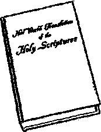

NOTE!
Unless otherwise indicated by the name of the Bible version, all Scripture texts found herein are quoted from the New World Translation of the Holy Scriptures, 1961 edition. For such Scripture quotations we give first the name of the Bible book, then the number of the chapter, and last the number of the verse.
The questions at the bottom of the pages are for readers to use in individual study of the paragraphs or in group study with their family or friends.
COPYRIGHT, 1962 by WATCH TOWER BIBLE & TRACT SOCIETY OF PENNSYLVANIA
Published by Watchtower Bible and Tract Society of New York, Inc.
International Bible Students Association Brooklyn, New York, U.S.A.
Made in the United States of America
PART
(In Five Parts)
UI
I N THE beginning was the Word, and the Word
■ was with God, and the Word was God. The same was in the beginning with God.” That is how the first two verses of the apostle John’s account of the life of Jesus Christ read, according to the Roman Catholic Douay Version and the King James Version of the Holy Bible.
2 Thus at the very beginning of John’s account the very first one to be introduced to us is someone who is called “the Word.” After having such a sudden introduction to the Word, any reader would naturally want to know who or what this Word was. In fact, since the second century of our Common Era there has been a big debate as to the identity of this Word. And particularly since the fourth century there has been much religious persecution poured out upon the minority group in this debate.
3 The apostle John wrote his account in the common Greek of the first century. Such Greek was then an international language. Those for whom John wrote could speak and read Greek. So they knew what he meant by those opening statements, or, at least, they could get to know by reading all the rest of John’s account in its original Greek. But, when it comes to translating those opening statements into other languages, say modern English, there arises a difficulty
1, 2. In his life account of Jesus Christ, whom does John first introduce to us, and so what do readers naturally want to know?
3. In what language did John write his account, and why do we have difficulty in understanding John's opening statements?
3
4 “TH! WORD"—WHO IS HE? ACCORDING TO JOHN in translating them right in order to bring out the exact meaning.
4 Of course, the Bible reader who uses the generally accepted versions or translations will at once say: “Why, there should be no difficulty about knowing who the Word is. It plainly says that the Word is God; and God is God.” But, in answer, we must say that not all our newer modern translations by Greek scholars read that way, to say just that. For instance, take the following examples: The New English Bible, issued in March of 1961, says: “And what God was, the Word was.” The Greek word translated “Word” is logos; and so Dr. James Moffatt’s New Translation of the Bible (1922) reads: “The Logos was divine.” The Complete Bible—An American Translation (Smith-Goodspeed) reads: “The Word was divine.” So does Hugh J. Schon-field’s The Authentic New Testament. Other readings (by Germans) are: ByBoehmer: “It was tightly bound up with God, yes, itself of divine being.”* By Stage: “The Word was itself of divine being.”! By Menge: “And God (=of divine being) the Word was.”! By Pfaefflin: “And was of divine weightiness.”D And by Thimme: “And God of a sort the Word was.”0
5 But most controversial of all is the following reading of John 1:1, 2: “The Word was in the beginning, and the Word was with God, and the Word was a god. This Word was in the beginning with God.” This reading is found in The New Testament in An Improved
* “Es war fest mlt Gott verbunden, ja selbst goettlichen Wesens,” The New Testament, by Rudolf Boehmer, 1910.
t "Das Wort war selbst goettlichen Wesens,” The New Testament, by Curt Stage, 1907.
t "Und Gott (= goettlichen Wesens) war das Wort,” The Holy Scriptures, by D. Dr. Hermann Menge, twelfth edition, 1951.
□ "Und war von goettlicher Wucht,” The New Testament, bv Friedrich Ffaefflin, 1949. '
o “Und Gott von Art war das Wort,” The New Testament, by Ludwig Thimme, 1919.
4. Do all modern translations read like the old accepted versions of the Bible, and what examples do we have to illustrate whether?
S. What is the most controversial translation of all, as shown by two examples, and why may the translation by Professor Torrey be placed alongside the above?
Version, published in London, England, in 1808.* Similar is the reading by a former Roman Catholic priest: “In the beginning was the Word, and the Word was with God, and the Word was a god. This was with God in the beginning. Everything came into being through the Word, and without it nothing created sprang into existence.” (John l:l-3)f Alongside that reading with its much-debated expression “a god” may be placed the reading found in The Four Gospels—A New Translation, by Professor Charles Cutler Torrey, second edition of 1947, namely: “In the beginning was the Word, and the Word was with God, and the Word was god. When he was in the beginning with God all things were created through him; without him came no created thing into being.” (John 1:1-3) Note that what the Word is said to be is spelled without a capital initial letter, namely, “god.”
°So in the above-quoted Bible translations we are confronted with the expressions “God,” “divine,” “God of a sort,” “god,” and “a god.” Men who teach a triune God, a Trinity, strongly object to the translation “a god.” They say, among other things, that it means to believe in polytheism. Or they call it Unitarianism or Arianism. The Trinity is taught throughout those parts of Christendom found in Europe, the Americas and Australia, where the great majority of the 4,000,000 readers of The Watchtower live. Readers in the other parts, in Asia and Africa, come in contact with the teaching of the Trinity through the missionaries of Christendom. It becomes plain, in view of this, that we have to make sure of not only who the Word or Logos is but also who God himself is.
* The title page reads: “The New Testament in An Improved Version, upon the basis of Archbishop Newcome’s New Translation: with a Corrected Text, and Notes Critical and Explanatory. Published by a Society for Promoting Christian Knowledge and the Practice of Virtue, by the Distribution of Books."—Unitarian.
t The New Testament—A New Translation and Explanation Based on the Oldest Manuscripts, by Johannes Greber (a translation from German into English), edition of 1937, the front cover of this bound translation being stamped with a golden cross.
6, With what differing expressions are we confronted in the abovequoted translations, and so now whose identity do we have to find out?
’ Christendom believes that the fundamental doctrine of her teachings is the Trinity. By Trinity she means a triune or three-in-one God. That means a God in three Persons, namely, “God the Father, God the Son, and God the Holy Ghost.” Since this is said to be, not three Gods, but merely “one God in three Persons,” then the term God must mean the Trinity; and the Trinity and God must be interchangeable terms. On this basis let us quote John 1:1, 2 and use the equivalent term for God, and let us see how it reads:
s “In the beginning was the Word, and the Word was with the Trinity, and the Word was the Trinity. The same was in the beginning with the Trinity.” But how could such a thing be? If the Word was himself a Person and he was with the Trinity, then there would be four Persons. But the Word is said by the trinitarians to be the Second Person of the Trinity, namely, “God the Son.” But even then, how could John say that the Word, as God the Son, was the Trinity made up of three Persons? How could one Person be three?
’However, let the trinitarians say that in John 1:1 God means just the First Person of the Trinity, namely “God the Father,” and so the Word was with God the Father in the beginning. On the basis of this definition of Godj how could it be said that the Word, who they say is “God the Son,” is “God the Father”? And where does their “God the Holy Ghost” enter into the picture? If God is a Trinity, was not the Word with “God the Holy Ghost” as well as with “God the Father” in the beginning?
10 Suppose, now, they say that, in John 1:1, 2, God means the other two Persons of the Trinity, so that in the beginning the Word was with God the Father and God the Holy Ghost. In this case we come to this difficulty, namely, that, by being God, the Word was God
7, *. What does Christendom say that God is, but by applying this equivalent term to John 1:1, 2, what tangle do we get into?
9. If it is claimed that “God” means God the Father, then into what difficulty do we get?
10, What it it is said that “God” means the other two Persons of the Trinity, and what attempted explanation does not explain it?
"THE WORD"—WHO JS HE? ACCORDING TO JOHN J the Father and God the Holy Ghost, the other two Persons of the Trinity. Thus the Word, or "God the Son,” the Second Person of the Trinity, is said to be also the First Person and the Third Person of the Trinity. It does not solve the difficulty to say that the Word was the same as God the Father and was equal to God the Father but still was not God the Father. If this were so, it must follow that the Word was the same as God the Holy Ghost and was equal to God the Holy Ghost but still was not God the Holy Ghost.
“And yet the trinitarians teach that the God of John 1:1, 2 is only one God, not three Gods! So is the Word only one-third of God?
12 Since we cannot scientifically calculate that 1 God (the Father) + 1 God (the Son) + 1 God (the Holy Ghost) = 1 God, then we must calculate that 1/3 God (the Father) +1/3 God (the Son) + 1/3 God (the Holy Ghost) = 3/3 God, or 1 God. Furthermore, we would have to conclude that the term "God” in John 1:1, 2 changes its personality, or that “God” changes his personality in one sentence. Does he?
13 Are readers of this booklet now confused? Doubtlessly so! Any trying to reason out the Trinity teaching leads to confusion of mind. So the Trinity teaching confuses the meaning of John 1:1, 2; it does not simplify it or make it clear or easily understandable.
M Certainly the matter was not confused in the mind of the apostle John when he wrote those words in the common Greek of nineteen centuries ago for international Christian readers. As John opened up his life account of Jesus Christ he was in no confusion of mind as to who the Word or Logos was and as to who God was.
15 We must therefore let the apostle John himself identify to us who the Word was and explain who God tl, 12. According to the Trinity, how much of God would the Word be. and what question do we have to ask about the personality of God? 13, 14. (a) What does the Trinity teaching do for the meaning of John 1:1, 2? (b) What was John's state of mind on the Word and on God? is. Whom must we let help us out on this puzzle of identities, and what writings can we draw upon for an - explanatory enlargement of things?
was. This is what John does in the rest of his life account of Jesus Christ and also in his other inspired writings. Besides the so-called Gospel of John, he wrote three letters or epistles and also Revelation or Apocalypse. By many John is understood to have written first the book Revelation, then his three letters and finally his Gospel. Says Biblical Archaeology, by G. Ernest Wright (1957), page 238: “John is usually connected with Ephesus in Asia Minor and is dated about A.D. 90 by most scholars.” For the Gospel of John this booklet accepts the date A.D. 98. So for an explanatory enlargement of things written in the Gospel of John we can draw upon his earlier writings, Revelation or Apocalypse and his three letters or epistles.
10 This we shall now do. We do so with a desire to reach the same conclusion about who the Word or Logos was that the apostle John does. For us to do so means our gaining a happy everlasting life in God’s righteous new world now so near at hand. John, with all the firsthand knowledge and associations that he had, had a reason or basis for reaching an absolutely right conclusion. He wanted us as his readers to reach a right conclusion. So he honestly and faithfully presented the facts in his five different writings, that he might help us to come to the same conclusion as he did. Thus, as we accept John’s witness as true, we start out with a right aim, one that will lead to an endless blessing for us.
WHAT ABOUT 1 JOHN 5: 7, Dy; AV?
17 If Trinity believers are not up-to-date, they will ask: Does not Jolin himself teach the Trinity, namely, that three are one? In their copy of the Bible they will point to 1 John 5:7 and read: “And there are three who give testimony in heaven, the Father, the Word, and the Holy Ghost. And these three are one.” That is what 1 John 5:7 says in the Roman Catholic Douay Version
16. In doing this, with what aim do we start out, and why?
17. What will Trinity believers, when not up-to-date, ask, and what must be said about the verse to which they point in their Bible?
"THE WORD"—WHO IS HE? ACCORDING TO JOHN 9 and similarly in the Authorized or King James Version. But the words “in heaven, the Father, the Word, and the Holy Ghost. And these three are one” do not appear in the oldest Greek manuscripts. Hence the most modern Bible translations omit those words, the Bible edition by the Roman Catholic Episcopal Committee of the Confraternity of Christian Doctrine putting the words in brackets along with an explanatory footnote, as follows: “The Holy See reserves to itself the right to pass finally on the origin of the present reading.”
18 The oldest Greek manuscript of the Christian Scriptures is, in the judgment of many, the Vatican Manuscript No. 1209, written in the first half of the fourth century. In our own copy of this Greek manuscript as edited by Cardinal Angelus Maius in 1859, he inserted the Greek words into the Manuscript copy but added a sign of a footnote at the end of the preceding verse. The footnote is in Latin and, translated, reads:
From here on in the most ancient Vatican codex, which we reproduce in this edition, the reading is as follows: “For there are three that give testimony, the spirit, and the water, and the blood: and the three are for one. If the testimony” etc. There is therefore lacking the celebrated testimony of John concerning the divine three persons, which fact was already long known to critics.*
18 Says Dr. Edgar J. Goodspeed, the Bible translator, on 1 John 5:7: “This verse has not been found in Greek in any manuscript in or out of the New Testament earlier than the thirteenth century. It does not appear
* The Latin footnote reads: '‘Exin in antiqulsslmo codice vatlcano, quern hac editione repraesentamus, legitur tantum: on reeig ctoiv oi noe-TVQOWTeg, to xveopa, «ui to vScoq, x«i to ai)ia* xai oi zqeig eig To ev ciaiv. Ei tiiv pmyTveiov etc. Deest igitur celebre Iohannis de divinls tribus personls testimonium, quae res iamdiu criticis nota erat.”—Page 318.
IS. What confession does Cardinal Maius make about 1 John 5:7 in his edition of the Vatican Manuscript No. 1209?
19. What does Dr. E. J. Goodspeed say about 1 John 5:7, and so on what basis can we not proceed in examining the Identities of the Word and of God?
in any Greek manuscript of 1 John before the fifteenth century, when one cursive has it; one from the sixteenth also contains the reading. These are the only Greek manuscripts of the New Testament in which it has ever been found. But it occurs in no ancient Greek manuscript or Greek Christian writer or in any of the oriental versions. ... It is universally discredited by Greek scholars and editors of the Greek text of the New Testament.”* So in our examination of John’s writings as to who the Word and God are, we cannot proceed on the basis of what the spurious words in 1 John 5:7 say.
HUMAN BIRTH ON EARTH
si> There came a time when the Word or Logos left the personal presence of God with whom he had been in the beginning. This was when he came down to earth and mingled with men. Says John 1:10, 11: “He was in the world, and the world came into existence through him, but the world did not know him. He came to his own home, but his own people did not take him in." When coming down, did the Word do the same as heavenly angels had done, still stay a spirit person but merely clothe himself with a visible human body and operate through this body in mingling with men? Or did the Word become a mixture, an intermixture of that which is spirit and that which is flesh? Rather than guess at it, let us allow John to tell us :
-1 “So the Word became flesh and resided among us, and we had a view of his glory, a glory such as belongs to an only-begotten son from a father; and he was full of undeserved kindness and truth." (John 1:14) Other Bible translations agree that, the Word “became flesh." (RS; AT; Ro; New English) This is far different from
* Quoted from page 557 of 'fhc t’onrlswied Parallel New Testament —The American Translulion anil The. Kinn James Version. Edition of J 943.
20, 21. (a) When did the Word lenvo < iixl'.-t personal presence, and what questions arise as to how the Word did It? (b) How does John say the Word did this, and whnt docx this mean? saying that he clothed himself with flesh as in a materialization or as in an incarnation. It means he became what man was—flesh and blood—that he might be one of us humans. Search John’s writings as much as we can, yet we do not once find that John says that the Word became a God-Man, that is, a combination of God and man,
22 The expression God-Man is an invention of trinitarians and is found nowhere in the entire Bible. What the Word called himself when on earth was “the Son of man,” something very different from God-Man. When he first met the Jew named Nathanael, he said to this Jew: “You will see heaven opened up and the angels of God ascending and descending to the Son of man.” (John 1:51) To the Jewish Pharisee Nicodemus he said: “Just as Moses lifted up the serpent in the wilderness, so the Son of man must be lifted up, that everyone believing in him may have everlasting life.” (John 3:14,15) In John’s writings the expression “Son of man” is applied to the Word sixteen times. This indicates that it was by a human birth on earth that he “became flesh.” His becoming flesh meant nothing less than that he ceased to be a spirit person.
23 By becoming flesh the Word, who was formerly an invisible spirit, became visible, hearable, feelable to men on earth. Men of flesh could thus have direct contact with him. The apostle John reports to us his own experience with the Word when he existed in the flesh, that John might share that blessing with us. John says:
24 “That which was from the beginning, which we have heard, which we have seen with our eyes, which we have viewed attentively and our hands felt, concerning the word of life, (yes, the life was made manifest, and we have seen and are bearing witness and reporting to you the everlasting life which was with the Father and was made manifest to us,) that which
22. As to his humanity, what did the Word rail himself, and what did his becoming flesh really mean?
23, 24. By becoming flesh, what did the Word become to man’s senses, and In what words does John report on his own experience with the Word?
we have seen and heard we are reporting also to you, that you too may be having a sharing with us. Furthermore, this sharing of ours is with the Father and with his Son Jesus Christ.”—1 John 1:1-3.
25 John brings to our attention the human mother of this Son of man, but never by her personal name. John never speaks of her firstborn Son as the “Son of Mary.” John mentions his human caretaker father by name right near the beginning of the account, when Philip said to Nathanael: “We have found the one of whom Moses, in the Law, and the Prophets wrote, Jesus, the son of Joseph, from Nazareth.” (John 1:45) Later, after this Jesus fed five thousand men miraculously from five loaves and two fishes, the Jews who tried to belittle Jesus’ background said: “Is this not Jesus the son of Joseph, whose father and mother we know?” (John 6:42) So, whereas John speaks of other women by their name Mary, he leaves the mother of Jesus nameless. Whenever she is spoken of it is never as “Mary,” or “Mother,” but always as “Woman.”
2SFor example, in his last reported words to her, when Jesus was dying like a criminal on a stake at Golgotha as his earthly mother and his beloved disciple John stood looking on, he “said to his mother: ‘Woman, see! your son!’ Next he said to the disciple: ‘See! Your mother!’ And from that hour on the disciple took her to his own home.” (John 19:25-27) How long John took care of Mary the mother of Jesus he does not tell us; but he never tries to glorify her or beatify her, even name her, for being Jesus’ mother.
27 However, according to Trinity teachers, when “the Word became flesh,” Mary became the mother of God. But since they say God is a Trinity, then the Jewish virgin Mary became the mother of merely a third of God, not “tiie mother of God.” She became the mother of only one Person of God, the Person that is put sec-
25, 26. (a) How does John refer to the earthly caretaker father of Jesus? (b) How does John, after becoming her caretaker, speak of Jesus' human mother?
27, 28. Whose mother do trin Iter Ians claim that Mary became, and to what question does this lead?
"THE WORD"—WHO IS HE? ACCORDING TO JOHN 13 ond in the formula “God the Father, God the Son and God the Holy Ghost.” So Mary was merely the mother of “God the Son”; she was not the mother of “God the Father,” neither the mother of “God the Holy Ghost.”
28 But if Roman Catholics and others insist that Mary was “the mother of God,” then we are compelled to ask, Who was the father of God? If God had a mother, who was his father? Thus we see again how the Trinity teaching leads to the ridiculous.
20 Furthermore, the apostle John saw in a vision certain heavenly creatures saying to God on his throne: “Holy, holy, holy, Lord God Almighty, who was, and who is, and who is to come,” and others saying: “Thou art worthy, O Lord our God, to receive glory, and honour, and power: because thou hast created all things; and for thy will they were, and have been created.” (Revelation 4:8, 11, Dy) The Bible is plain in saying that the heaven of heavens could not contain the Lord God Almighty; and King Solomon’s stupendous temple in Jerusalem could not contain the only Lord God Almighty. How, then, could such a microscopic thing as the egg cell in Mary’s womb contain God, for her to become “the mother of God”? So let us be careful of what we teach so that we do not belittle God.
HIS BIRTHPLACE
80 Among the Jews a debate arose as to the birthplace of Jesus who came from Nazareth in the province of Galilee. The Jews in general did not know that he had been born in Bethlehem. Hence John tells us: “Others were saying: 'This is the Christ.1 But some were saying: ‘The Christ is not actually coming out of Galilee, is he? Has not the Scripture said that the Christ is coming from the offspring of David, and from Bethlehem the village where David used to be?’ Therein. In Revelation 4:8. 11. how does John describe the Lord God. and what question arises as to Mary's having him in her womb?
30, 31. (a) What question arose among the Jews about this Jesus who apparently came from Nazareth in Galilee? (b) At Jesus' triumphal ride Into Jerusalem how did the great crowd hint at his birthplace?
fore a division over him developed among the crowd.” (John 7:41-43) However, when Jesus made his triumphal ride into Jerusalem in the spring of A.D. 33, there were many Jews who were ready to hail him as God’s promised King, the Son of King David of Bethlehem. John 12:12-15 tells us:
81 “The next day the great crowd that had come to the festival, on hearing that Jesus was coming to Jerusalem, took the branches of palm trees and went out to meet him. And they began to shout: ‘Save, we pray you! Blessed is he that comes in Jehovah’s name, even the king of Israel!’ But when Jesus had found a young ass, he sat on it, just as it is written [in Zechariah 9:9]: ‘Have no fear, daughter of Zion. Look! Your king is coming, seated upon an ass’s colt.’ ”—See Psalm 118:25, 26.
3-Yet, three years before that, when Jesus began his public career in the land of Israel, Nathanael recognized Jesus’ connections with King David, saying to him: “Rabbi, you are the Son of God, you are King of Israel.” (John 1:49) And in the vision to the apostle John the royal connections of Jesus are emphasized a number of times. In Revelation 3:7 Jesus himself says: “These are the things he says who is holy, who is true, who has the key of David.” In Revelation 5:5 an elderly person says of Jesus: “Look! The Lion that is of the tribe of Judah, the root of David, has conquered.” Finally, in Revelation 22:16, we read: “I, Jesus, sent my angel to bear witness to you people of these things for the congregations. I am the root and the offspring of David, and the bright morning star.” Although Jesus on earth spoke of himself as “Jesus the Naza-rene,” he had really been born in King David’s native town of Bethlehem but had merely been brought up in Nazareth. (John 18:5-7; 19:19) There Joseph his caretaker came to be looked on as his father. His forefather David had an earthly kingdom; but Jesus’ heav-
32. (a) How did Nathanael indicate Jesus’ royal connections? (b) In Revelation bow did Jesus indicate his royal connections, and how will his kingdom compare with that of his forefather?
“THE WORD"—WHO IS HE? ACCORDING TO JOHN .1 ”, enly kingdom is something grander and more beneficial to all mankind.
33 The one who was the Word or Logos spent only a brief time among men, less than thirty-five years from the time of his conception in the womb of the Jewish virgin who descended from King David. As An American Translation renders John 1:14: “So the Word became flesh and blood and lived for a while among us.” Clergymen who believe in an incarnation and a GodMan call notice to the fact that the Greek verb translated “lived for a while” has its root in the word meaning "tent” or “tabernacle.” In fact, that is the way that Dr. Robert Young renders the expression, translating it: “And the Word became flesh, and did tabernacle among us.” Since campers dwell in a tent, the clergymen argue that Jesus was still a spirit person and was merely tabernacling in a fleshly body and so was an incarnation, a God-Man. However, the apostle Peter used a like expression about himself, saying: “I think it meet as long as I am in this tabernacle, to stir you up by putting you in remembrance: being assured that the laying away of this my tabernacle is at hand.” (2 Peter 1:13, 14, Dy) Certainly by such words Peter did not mean he himself was an incarnation. Peter meant he was merely going to reside for a while longer on earth as a fleshly creature.
34 The same Greek word used in John 1:14 is used also of other persons who are not incarnations, in Revelation 12:12; 13:6. So the words of John 1:14 do not support the incarnation theory.
33, 34. (a) How do the clergymen argue that the wording of John 1:14 implies an incarnation of the Word? (b) How does Peter’s use of the key word, together with uses of it elsewhere, argue it?
PART r
THE apostle John opened up his account, saying: “In the beginning was the Word, and the Word was with God.” By that he did not mean .the beginning of Jesus’ public ministry on earth nineteen centuries ago. He meant that the Word had a prehuman existence, long before he “became flesh” on earth. John makes that point clear all through his account. More than a month after Jesus was baptized in the Jordan River, John the Baptist called attention to Jesus and to his previous life, saying: “See, the Lamb of God that takes away the sin of the world! This is the one about whom I said, Behind me there comes a man who has advanced in front of me, because he existed before me. Even I did not know him, but the reason why I came baptizing in water was that he might be made manifest to Israel.” —John 1:29-31.
86 John the Baptist was born about six months before the Word “became flesh” or was born as the Son of the Jewish virgin. For that reason John said with reference to Jesus: “Behind me there comes a man.” But now, because of what happened to Jesus after John baptized him, John could call Jesus “a man who has advanced in front of me.” So when John said of Jesus: “He existed before me,” John must have meant that Jesus had a prehuman existence. John also pointed out that Jesus was to become a sacrifice to God, for in ancient Israel lambs were daily sacrificed to God by the Jewish priests. In order for Jesus as the “Lamb of God” to take away the sin of the world, his blood would have to flow in sacrifice, for without the shedding of 35, 36. (a) To what existence does John 1:1 refer, and what man first called attention to that? (b) How was Jesus a man coming after John and yet existing before him, and to what did John’s calling him the Lamb of God refer?
"THE WORD"—WHO IS HE? ACCORDING TO JOHN 17 blood of an innocent victim there was no forgiveness of sins obtainable from God.—Hebrews 9:22.
37 On a number of occasions Jesus himself testified to his own existence in heaven before becoming flesh on earth. Thus Jesus was able to speak about ‘'heavenly things,” because, as Jesus said to the Jewish ruler Nicodemus, “no man has ascended into heaven but he that descended from heaven, the Son of man.”—John 3: 12,13.
38 Jesus spoke of himself as symbolical manna from heaven and said to the Jews: “Moses did not give you the bread from heaven, but my Father does give you the true bread from heaven. For the bread of God is the one who comes down from heaven and gives life to the world.” “I have come down from heaven to do, not my will, but the will of him that sent me.” “I am the living bread that came down from heaven; if anyone eats of this bread he will live forever; and, for a fact, the bread that I shall give is my flesh in behalf of the life of the world.” “He also that feeds on me, even that one will live because of me. This is the bread that came down from heaven.” Many Jews murmured at such sayings of Jesus, and so he surprised them still more when he said: “Does this stumble you? What, therefore, if you should behold the Son of man ascending to where he was before?”—John 6:32, 33, 38, 51, 57, 58, 61, 62.
39 Hence, later, when Jesus spoke to the unbelieving Jews about going away, he said: “You are from the realms below; I am from the realms above. You are from this world; I am not from this world.” “If God were your Father, you would love me, for from God I came forth and am here. Neither have I come of my own initiative at all, but that One sent me forth.” (John 8:23, 42) For that reason Jesus could pray to God and say in the hearing of his faithful apostles: 37. Why was Jesus able to speak to Nicodemus about heavenly things? 33. How. in speaking about manna, did Jesus testify to his previous existence in heaven?
39, 40. (a) On another occasion Jesus described himself as being from where? (b) Hence what could Jesus ask of God in prayer?
40 “Father, glorify me alongside yourself with the glory that I had alongside you before the world [of mankind] was. Also, I am no longer in the world, but they are in the world and I am coming to you. Holy Father, watch over them on account of your own name which you have given me, in order that they may be one just as we are. ... I wish that, where I am, they also may be with me, in order to behold my glory that you have given me, because you loved me before the founding of the world.”—John 17:5,11, 24.
41 Up in heaven Jesus, as the Word or Logos, had had glory alongside his Father and had been loved by the Father. This was before the world was. The apostle John heard those words of Jesus, and so John could correctly make this comment: “He that comes from above is over all others. He that is from the earth is from the earth and speaks of things of the earth. He that comes from heaven is over all others. What he has seen and heard, of this he bears witness.” (John 3:31, 32) There is no question that Jesus had a prehuman life. As the Word or Logos he had been with God “in the beginning.”
WHAT BELIEVING JEWS CALLED HIM
42 When on earth, Jesus Christ called and chose twelve apostles. These were all Jews by birth and were brought up in the “Jews’ religion” or in Judaism, to believe in only one God, Jehovah. (Galatians 1:13,14, AV) Did Jesus as their Teacher tell them about a Trinity? Did he convert them to believe in a Trinity in which he himself was the Second Person or “God the Son”? Did the apostles and other disciples get to regarding Jesus as “God the Son” and calling him such? What did they call him? Let us see what John reports.
43 After Jesus was baptized, John the Baptist intro-
41. Of what, therefore, did the One from above speak and bear witness? 42. In whom did the twelve believe before Jesus called them to be apostles, and so what questions arise about this?
43, 44. After John baptized Jesus, to what fact did John bear witness about him?
duced his own disciples to Jesus. John was sent by God to baptize, and God told John what to look for. So how did John refer to the baptized Jesus when introducing Jesus to the Jews who were John’s own disciples?
•‘■‘For an answer let us read John 1:32-34: “John also bore witness, saying: ‘I viewed the spirit coming down as a dove out of heaven, and it remained upon him. Even I did not know him, but the very One who sent me to baptize in water said to me, “Whoever it is upon whom you see the spirit coming down and remaining, this is the one that baptizes in holy spirit.” And I have seen it, and I have borne witness that this one is the Son of God.’ ”
45 John the Baptist himself was filled with holy spirit right from his mother’s womb. Did John bear witness that Jesus was Jehovah or that Jesus was God? No! John the Baptist told his own disciples: “This one is the Son of God.” John said, not “God the Son,” but, “the Son of God,” an expression meaning something altogether different. John did not expect Jehovah God to come to him to be baptized in water. John expected the one who was to become the Christ, the Messiah, or Anointed One, the one whom God would anoint with holy spirit. And so John did not let anyone think that he himself was Christ. He said to his disciples: “You yourselves beai’ me witness that I said, I am not the Christ, but, I have been sent forth in advance of that one. . . . That one must go on increasing, but I must go on decreasing.” (John 3:28-30) By what John saw he knew that Jesus was the Christ, God’s Anointed One.
48 John the Baptist taught his disciples and he turned them over to Jesus Christ to follow him as the “Son of God.” Did these disciples change their minds about Jesus after hearing, observing and being with him? What did those disciples call him, from first to last?
45. Whom did John expect to come to him for baptism, and what, therefore, did John disclaim to be?
46. After John turned his disciples over to Jesus, what shows whether they changed their minds as to who John said Jesus was?
When Jesus first met Nathanael and amazed him by his foresight, “Nathanael answered him: ‘Rabbi, you are the Son of God, you are King of Israel.’ ” (John 1:49) In 1 John 4:15; 5:5, the apostle says: “Whoever makes the confession that Jesus Christ is the Son of God, God remains in union with such one and he in union with God.” “Who is the one that conquers the world but he who has faith that Jesus is the Son of God?” In 2 John 3 he speaks of “peace from God the Father and from Jesus Christ the Son of the Father.”
47 Before resurrecting Lazarus, then four days dead, Jesus asked Martha the sister of Lazarus whether she believed what he had just said. In answer Martha said: “Yes, Lord; I have believed that you are the Christ the Son of God, the One coming into the world.” (John 11:27) Notable even is the testimony of Jesus’ bloodthirsty enemies. When the Roman governor was minded to shift the distasteful job of execution over to the Jews since he himself had found no fault in Jesus, the Jews answered the governor: “We have a law, and according to the law he ought to die, because he made himself God’s son.” (John 19:7) Thus John the Baptist, Jesus' apostles, Lazarus’ sister Martha, and even the enemies all agreed in their witness that Jesus was “the Son of God.” Not God himself!
48 When John the Baptist explained why he must decrease in regard to having disciples but Jesus must increase in the number of baptized followers, John pictured Jesus as a bridegroom. John said: “He that has the bride is the bridegroom. However, the friend of the bridegroom, when he stands and hears him, has a great deal of joy on account of the voice of the bridegroom. Therefore this joy of mine has been made full.” (John 3:29) Jolin had much joy in turning over baptized disciples to Jesus Christ.
47. What did Martha say was her belief in Jesus, and what did his enemies say was the reason why Jesus deserved to die according to their law?
48, 49. (a) What comparison did John make as to turning over his disciples to Jesus joyfully? (b) Whom does the Bride expect to marry?
49 Since Jesus is the Bridegroom, symbolically speaking, then the entire group of his baptized, anointed followers must be his Bride. Their hope is that of being united with the Lord Jesus Christ as their Bridegroom in heaven. They are not expecting to be married to God, which would be the case if God were a Trinity. Nor are they expecting to be married to a particular Person of such a Trinity, namely, to the Second Person of the Trinity, the so-called God the Son. They cannot imagine being married to a Trinity or even to a third part of this Trinity. The inspired Holy Scriptures do not teach such a thing, like someone marrying a Siamese twin!
50 The Bridegroom Jesus Christ marries, not the whole human family of billions, but only a limited number taken from the human family. In the Revelation the apostle John had a vision of the Bridegroom and Bride together on the heavenly location of government, called Mount Zion, as foreshadowed by Mount Zion in Jerusalem where King David ruled. John says: “And I saw, and, look! the Lamb standing upon the Mount Zion, and with him a hundred and forty-four thousand having his name and the name of his Father written on their foreheads. . . . And they are singing as if a new song before the throne and before the four living creatures and the older persons; and no one was able to master that song but the hundred and forty-four thousand, who have been bought from the earth. These are the ones that did not defile themselves with women; in fact, they are virgins. These are the ones that keep following the Lamb no matter where he goes. These were bought from among mankind as a first fruits to God and to the Lamb.”—Revelation 14:1-4.
51 The Bride class are thus pictured as a virgin class, who have not defiled themselves with persons or organizations guilty of spiritual adultery by becoming friends with this immoral world. They have their Bridegroom’s so. Whom does the Bridegroom marry, and how many does Revelation show?
51. How is the Bride class virgin, marked in the lorehead and bought? name and that of his Father upon their foreheads, but no other name, no name of any third Person of a Trinity called God the Holy Ghost. This Bride class of 144,000 members has been taken out from the earth for heaven, yes, taken out from among flesh-and-blood mankind for eternal life as spirit creatures. How? By being bought through the sacrifice of their Bridegroom, “the Lamb of God that takes away the sin of the world.”
52 They are like a first fruits that the Israelites took out of their harvest crops and offered up to Jehovah God through his temple servants, as on the day of Pentecost when the high priest presented to God two leavened loaves of wheat bread “as first ripe fruits to Jehovah.” (Leviticus 23:15-20) Since the Bride class are only the “first fruits to God and to the Lamb,” there must be a much larger number of mankind who will be saved to eternal life, not in heaven, but on earth. Why? Because the Lamb of God takes away the “sin of the world” and not merely that of his Bride class. —John 1:29; 1 John 2:1, 2.
58 The apostle John leaves us in no doubt as to whom the Bride class, the anointed Christian congregation, marries in heaven. In Revelation 19:6-9 John writes: “Then I heard what seemed to be the voice of a great multitude, like the sound of many waters and like the sound of mighty thunderpeals, crying, ‘Hallelujah! For the Lord our God the Almighty reigns. Let us rejoice and exult and give him the glory, for the marriage of the Lamb has come, and his Bride has made herself ready; it was granted her to be clothed with fine linen, bright and pure’—for the fine linen is the righteous deeds of the saints. And the angel said to me, ‘Write this: Blessed are those who are invited to the marriage supper of the Lamb.’ And he said to me, ‘These are true words of God.’ ”—RS.
Si. How is the Bride class like a "first fruits to God," and what does this fact mean for mankind in general?
53, 54. According to Revelation 19:6-9, whose marriage is it, to whom does the Bride belong, and for whom is the marriage supper?
54 The marriage is that of the Lamb of God, not the marriage of the Lord our God the Almighty. The Bride is the Bride of the Lamb of God, not the Bride of God the Almighty. The marriage supper is that of the Lamb of God; and the prophetic parables of Jesus indicate that it is his Father, the Lord our God the Almighty, who prepares the marriage supper for the Lamb, his Son.
65 A few verses later on, in Revelation 19:11-16, the apostle John identifies the Lamb of God as being the Word or Logos, for John sees the Lamb riding forth to battle against his Father’s enemies. John describes him, saying: ‘Tie is clad in a robe dipped in blood, and the name by which he is called is The Word of God. . . . On his robe and on his thigh he has a name inscribed, King of kings and Lord of lords.” (RS) Hence his 144,000 faithful followers become the Bride of the Word of God, not the Bride of God.
68 The ones married are shown again in the further vision, which John describes, saying: “I saw also the holy city, New Jerusalem, coming down out of heaven from God and prepared as a bride adorned for her husband. And there came one of the seven angels who had the seven bowls which were full of the seven last plagues, and he spoke with me and said: ‘Come here, I will show you the bride, the Lamb’s wife.’ So he carried me away in the power of the spirit to a great and lofty mountain, and he showed me the holy city Jerusalem coming down out of heaven from God and having the glory of God. . . . The wall of the city also had twelve foundation stones, and on them the twelve names of the twelve apostles of the Lamb. And I did not see a temple in it, for Jehovah God the Almighty is its temple, also the Lamb is. And the city has no need of the sun nor of the moon to shine upon it, for the glory of God lighted it up, and its lamp was the Lamb.”—Revelation 21:2, 9-11, 14, 22, 23.
55. Whom does Revelation 19:11-16 Identify the Lamb of God as being, and whose Bride do the 144,000 therefore become?
56, 57. In Revelation 21, between whom do we see a distinction made in connection with the Bride class, and how?
57 Always we are shown that there is a distinction made between the Lamb and the Lord our God the Almighty, and that it is to the Lamb that the Bride of 144,000 members is married. It is the Lamb’s wife that she becomes. If there were such a thing as the Trinity, then the 144,000 could not help marrying God in one of his Persons and thus becoming one with God. But the Bible does not teach this.
SELF-IDENTIFICATION
58 For the benefit of the Bride class John the Baptist identified the Bridegroom as the Lamb of God. How, though, did the Bridegroom identify himself to his Bride class and to others? What relationship did he himself claim to have with God? Did he ever claim to be more than John the Baptist declared him to be, namely, God’s Son? In answer listen first to these much-loved words of Jesus Christ to Nicodemus: “For God so loved the world, that he gave his only begotten Son, that whosoever believeth in him should not perish, but have everlasting life. For God sent not his Son into the world to condemn the world; but that the world through him might be saved. He that believeth on him is not condemned: but he that .believeth not is condemned already, because he hath not believed in the name of the only begotten Son of God.”—John 3:1618, AV.
69 Jesus once cured a man blind from birth. According to a number of Bible versions, Jesus later said to him: “Dost thou believe on the Son of God?” The man answered: “Who is he, Lord, that I might believe on him?” Jesus replied: “Thou hast both seen him, and it is he that talketh with thee.” Jesus did not ask the man to believe that he, Jesus, was more than the Son of God. The man confessed to believing only that.—John 9: 35-37, AV; Dy; AS; ED; Lamsa; Murdock.
58 - in his talk to Nicodemus, who did Jesus claim to be?
59 After Jesus cured the man born blind, whom did the man confess believing Jesus to be?
c° Before going to the town of Bethany in behaif of his sick friend Lazarus, Jesus said to his apostles: “This sickness is not with death as its object, but is for the glory of God, in order that the Son of God may be glorified through it.” Before Jesus reached the tomb where Lazarus now lay dead, his sister Martha confessed to believing what Jesus claimed to be, as she said: “Yes, Lord; I have believed that you are the Christ the Son of God, the One coming into the world.” —John 11:4,27.
61 Even in heaven the glorified Jesus speaks of himself as the Son of God. In Revelation 2:18, when sending a message to the Christian congregation in the city of Thyatira, the glorious Jesus says to John: “To the angel of the congregation in Thyatira write: These are the things that the Son of God says, . . . And to him that conquers and observes my deeds down to the end I will give authority over the nations, and he shall shepherd the people with an iron rod so that they will be broken to pieces like clay vessels, the same as I have received from my Father.”—Revelation 2:18, 26, 27.
62 On the basis of such a relationship to God Jesus addressed himself to God as a son and prayed: “Father, the hour has come; glorify your son, that your son may glorify you, according as you have given him authority over all flesh, that, as regards the whole number whom you have given him, he may give them everlasting life. This means everlasting life, their taking in knowledge of you, the only true God, and of the one whom you sent forth, Jesus Christ.” (John 17:1-3) Thus Jesus did not claim to be “the only true God.”
cs In saying this, are we not forgetting John 10:31-39, according to which the Jews wanted to stone Jesus for saying: “I and the Father are one”? No, we are not W. Before raising Lazarus, who did he say was to be glorified, and thereafter whom did Martha say she believed Jesus to be?
61. In sending a message to the congregation in Thyatira, whom did Jesus speak of himself as being?
62. In prayer, in what relationship with God did Jesus speak of himself as being?
63. Why did the Jews want to stone Jesus, and what did Jesus quote from the Psalms to show whether they were justified in doing so?
26 “THE WORD"—WHO IS HE? ACCORDING TO JOHN forgetting. The Jews, who believed in the one God whose name is Jehovah, there wanted to stone Jesus. Why? Not because he taught such a thing as a Trinity and that he was one-third of it, but because he spoke of himself as the Son of God, the Son of their God Jehovah. Jesus said to them with their stones in their hands: “Many good works, from my Father, I have shown you; for which of them do you stone me?” The Jews replied: “It is for no good work that we stone you, but for blasphemy, because you, a man, make yourself god.” {Torrey} Jesus then referred the Jews to their own Holy Scriptures, to Psalm 82:6, and said: “Is it not written in your law, I have said, Ye are gods? If God said, that those to whom he was speaking were gods (and the scripture cannot be annulled), do you accuse of blasphemy him whom the Father consecrated and sent into the world, because I said, I am the Son of God? If I do not do the works of my Father, do not believe me; but if I do them, even if you believe not me, believe the works, that you may perceive and understand that the Father is in me, and I in the Father.” —Torrey.
84 The very argument of Jesus here proves he did not claim to be God. Had he claimed to be God, then the Jews would have been right in stoning him for blasphemy. But Jesus argues that he claimed to be less than God. To prove this, Jesus quoted to them from Psalm 82, verses 1, 2, 6, 7 {AV} of which read: “God [Elohim] standeth in the congregation of the mighty; he judgeth among the gods [elohim]. How long will ye judge unjustly, and accept the persons of the wicked? .. . . I have said, Ye are gods [elohim]; and all of you are children of the most High. But ye shall die like men, and fall like one of the princes.” In this psalm the Most High God speaks to the unjust judges on earth, mere men, and calls them “gods,” or elohim in the Hebrew, and he tells them to correct their legal practice. Because those judges fail of their duty, it becomes neces-
M. (a) What did Jesus there argue that he himself was? (b) Who were the ones whom Psalm 82 addressed as “gods”?
sary for the Most High God to arise and judge the peoples of the earth.
“Their being called “gods” will not save these judges; neither will their considering themselves to be “sons of the Most High” or sons of God. That gives them no immortality. They are still mortal and will die just like other men. They will fall in death just like other judicial princes on earth, and this by the execution of God’s judgment. God’s word was against them in adverse judgment. It was human gods like these, among the Jews, that caused Jesus to be put to death at the hands of the Romans.—Exodus 22:28, AV; Dy.
66 Jesus told those who wanted to stone him that he had not claimed to be God or a god, even though Psalm 82:6 had called some men, some Israelite judges, “gods.” Jesus had been speaking to the Jews about God as being his Father, which would mean that he, Jesus, was the Son of God. Jesus said to them: “No one will snatch them [my sheep] out of my hand. What my Father has given me is something greater than all other things, and no one can snatch them out of the hand of the Father. I and the Father are one.”
87 After Jesus said that, his very argument that followed proved that he was not claiming to be God, nor was he saying that he and his heavenly Father were one God, a trinitarian God in which he and his Father were two Persons along with a third Person, “God the Holy Ghost.” Jesus did not say, I and the Father and the Holy Ghost are one. He mentioned no “Holy Ghost.”—John 10:28-30.
68 Jesus argued that his statement, “I and the Father are one,” did not mean claiming to be God. How so? Because Jesus told those Jews that he was calling himself less than God his Father. He told those Jews that their own law in Psalm 82:6 called the men against 65. Despite their being "gods.” what will happen to those judges, and for whose death were such kind of Jewish "gods” responsible?
66, 67. What did Jesus not claim to be, and what did he not say to the Jews about his Father and himself?
68. Using Psalm 82:6, how did Jesus prove that he did not claim to be God by saying: “I and the Father are one”? whom God’s word came in criticism “gods,” and that the Jews could not annul this scripture that called human judges by the title of “gods”; nor could they deny that this scripture said this, and they could not take this scripture out of the inspired Scriptures. And yet, when Jesus Christ, who performed so many wonderful good works among the Jews, spoke of God as his Father and spoke of himself as merely the Son of God, they said he blasphemed and they were ready to stone him as a blasphemer. Still he was more than those men whom Psalm 82 had called “gods,” because he, Jesus, was the one whom the heavenly Father had sanctified and sent into the world. If it was not blasphemy for Asaph to compose a psalm calling human judges in Israel “gods,” then it was far less a blasphemy for Jesus to speak of himself as merely the Son of God and not as a god.—Psalm 82, superscription.
69 Thus not once in all the above material from John’s writings have we found that Jesus Christ called himself God or let others speak of him as God. But ah! the trinitarians will say, not all the pertinent texts in John’s writings have yet been considered, scripture texts that will surely prove that Jesus did speak of himself as God and let himself be addressed as God, and these will prove that the many Bible translations are correct in rendering John 1:1 to read: “And the Word [or, the Logos] was God.” So in our next three parts of this article on “The Word” we shall deal with those texts. Let the reader join us in the consideration of them.
69. (a) In the material thus far from John’s writings, what have we failed to find about Jesus Christ? (b) Why is the reader invited to' join us in considering further material from John’s writings?
PART
JOHN the son of Zebedee of the city of Bethsaida was personally acquainted with the Word. He tells us that this Word had been the companion of God in heaven, but that he “became flesh” by birth from a Jewish virgin in the city of Bethlehem, almost two thousand years ago. John identifies him as Jesus Christ the Son of God, and John became one of his twelve apostles. Today there are men who use John’s writings about the Word to argue that Jesus Christ was more than God’s Son, that he was God himself and that he became a God-Man. One saying of Jesus that these Trinity teachers use in arguing that Jesus himself claimed to be God is found in John 10:30, reading: “I and my Father are one.” (AV) However, in the argument that followed between Jesus and the Jews he proved that he had by no means said that he was God. Jesus explained: “I said, I am the Son of God.” (John 10:36, AV) But if he was not God himself, how were he and his Father one?
2 Jesus had just told a parable or illustration in which he spoke of himself as the Fine Shepherd and his followers as sheep. Then the Jews encircled him and said: “How long are you to keep our souls in suspense? If you are the Christ, tell us outspokenly.”
3 Jesus replied that his works spoke for him: “I told you, and yet you do not believe. The works that I am doing in the name of my Father, these bear witness
1. (a) Who was John, and whom did he argue Jesus Christ to be? (b) What do Trinity teachers argue that John 10:30 means?
2, 3. What did the Jews ask Jesus to tell them, and what did Jesus answer, leading up to his words in John 10:30?
29 about me. But you do not believe, because you are none of my sheep. My sheep listen to my voice, and I know them, and they follow me. And I give them everlasting life, and they will by no means ever be destroyed, and no one will snatch them out of my hand. What my Father has given me is something greater than all other things, and no one can snatch them out of the hand of the Father. I and the Father are one.”—John 10:24-30.
4 How were they one? One in body, one in identity, one in together making up one God, one as members of a Trinity or three-in-one God, the third member of which was the Holy Ghost? No! For if they belonged to a Trinity or triune God, then the two of them were not one but only two-thirds, as the Trinity has three Persons, namely, “God the Father, God the Son, and God the Holy Ghost.”
6 Instead of being in a Trinity, Jesus and his Father were one by being in agreement with each other as Father and Son. Never was there any disagreement between them. The witness that the Father gave and the witness that the Son gave were in agreement. Jesus the Son said to the Jews: “The Father who sent me is with me. Also, in your own Law it is written, ‘The witness of two men is true.’ I am bne that bears witness about myself, and the Father who sent me bears witness about me.” (John 8:16-18) Jesus here spoke of himself and of his Father as two distinct individuals. So by them enough testimony was provided for the Jews to believe, since testimony was required of two witnesses at least. Though two distinct individuals, yet the Father and the Son were one in their witness or testimony, because both their testimonies agreed.
6 The Father and the Son were also one in their care of the sheep. Long previously God had promised to set
4. Why does this oneness not refer to a Trinity, as clergymen teach? 5. How were they one in the relationship of Father and Son, and how one in witnessing?
6,7. (a) According to the prophet Ezekiel, what shepherding arrangements did Jehovah promise to set up for his sheeplike people? (b) How were Jesus and the Father one as regards these sheep? up a faithful shepherd over his sheeplike people. In Ezekiel 34:23, 24 (AS) God said: “I will set up one shepherd over them, and he shall feed them, even my servant David; he shall feed them, and he shall be their shepherd. And I, Jehovah, will be their God, and my servant David prince among them; I, Jehovah, have spoken it.” So Jehovah God raised up his Son Jesus Christ as a descendant of King David to fulfill this prophecy about the “one shepherd” like King David.
7 Jesus as Shepherd said he would not let any wolfish enemy snatch the sheep out of his hand. Neither would the Father, who turned these sheep over to his Son, let an enemy snatch them out of his own hand. The Father and the Son were agreed as to this protection and preservation of the sheep. They had one purpose in common, that of keeping these sheep from being destroyed but saving them to everlasting life. So in this sharing of interests the Father and the Son were one. That is why Jesus said he was doing his works “in the name of my Father.” In his works he acted as an agent for his Father, as a representative of his Father.
8 Proving that they were always at one and never at disagreement, Jesus said: “I have come down from heaven to do, not my will, but the will of him that sent me. This is the will of him that sent me, that I should lose nothing out of all that he has given me but that I should resurrect it at the last day. For this is the will of my Father, that everyone that beholds the Son and exercises faith in him should have everlasting life, and I will resurrect him at the last day.” (John 6:38-40) He did not fail that will of God, but fairly lived on doing it. He said: “My food is for me to do the will of him that sent me and to finish his work.” —John 4:34.
9 Jesus never did anything independently of his Father, but always kept at unity with his Father. He said: “I cannot do a single thing of my own initiative;
B. How were they one as to the will that was to he done?
9. How were they one as regards the initiative for action?
32 "THE WORD”—WHO )S HE? ACCORDING TO JOHN just as I hear, I judge; and the judgment that I render is righteous, because I seek, not my own will, but the will of him that sent me.” (John 5:30) Does that not bespeak perfect oneness between Father and Son? But such unity did not require Jesus to say: I am God; I am my Father.
10 That this is the kind of oneness that exists between Jesus Christ and Jehovah God is proved by Jesus’ own prayer to his heavenly Father for the sake of the sheep. In this prayer Jesus does not speak of himself as God but says to his Father:
11 “And this is life eternal, that they might know thee the only true God, and Jesus Christ whom thou hast sent. I have manifested thy name unto the men which thou gavest me out of the world: thine they were, and thou gavest them me; and they have kept thy word. Neither pray I for these alone, but for them also which shall believe on me through their word; that they all may be one; as thou, Father, art in me, and I in thee, that they also may be one in us: that the world may believe that thou hast sent me. And the glory which thou gavest me I have given them; that they may be one, even as we are one: I in them, and thou in me, that they may be made perfect in one; and that the world may know that thou hast sent me, and hast loved them, as thou hast loved me. Father, I will that they also, whom thou hast given me, be with me where I am; that they may behold my glory, which thou hast given me: for thou lovedst me before the foundation of the world.”—John 17:3, 6, 20-24, AV.
12 In this prayer to his heavenly Father, Jesus called him “the only true God” and said: “Thou, Father, art in me, and I in thee,” and, “we are one.” Did Jesus mean that he and his Father were one God, or two Persons of one triune God, the third member of which God is not even mentioned? Did Jesus mean that he and his Father were, as trinitarians say, “one in sub-10, n. What prayer of Jesus to his Father throws light on the kind of oneness that exists between them?
12. (a) Why did Jesus not mean that he and his Father were "one in substance’’? (b) What shows that Jesus did not class himself as God?
stance”? How could that be so in the face of what else Jesus, then of fleshly substance, said in this prayer to God who is spirit? (John 4:24) By calling his Father “the only true God” he shut himself out from being God or even a part or a Person of God. Otherwise, the Father would not be the “only true God.” The word “only” means, according to the dictionary, “alone in its class; without others of the same class or kind; sole; single; alone, by reason of superiority; preeminent; chief.” According to Jesus, his Father was, not only the “true God,” but also the “only” one. According to his own words, Jesus did not class himself with God.
13 When Jesus said that his Father “the only true God” gave him disciples out of this world, Jesus did not mean that he as God gave himself something. Some of Jesus’ apostles who were listening to his prayer were previously the disciples of John the Baptist, but John turned them over to Jesus as the Bridegroom who was entitled to the Bride class. But Jesus spoke of all his disciples, not as a gift made by himself to himself, but as a gift made to him by the “only true God,” his heavenly Father. “Thou gavest them me.”
14 In addition, Jesus did not speak of merely himself and his Father as being one but also of all his disciples as being one: “That they all may be one; as thou, Father, art in me, and I in thee, that they also may be one in us: ... that they may be one, even as we are one.” By praying that his disciples “may be one in us” Jesus certainly did not mean that his disciples were to be incorporated into a Trinity, so that the Trinity was to increase its membership or Persons from three to a hundred and forty-four thousand and three, to be no longer a three-in-one God but henceforth a many-in-one God. That is nonsensical! Jesus said that, as he and his Father were one, so his disciples were to be made one.
13. Who was It that gave Jesus men out of this world?
14. (a) If the Trinity were so, what would the disciples’ becoming one as Jesus and his Father are one mean? (b) In what way, then, are the disciples made one?
How are his disciples made one? Not as one God; not as one individual of many Persons. No, but one in belief in the one God and in the name of the one whom God sent; one in the kind of fruitage that they produced by the same spirit; one in kind of work; one in harmony and agreement among themselves; one in the same purpose and objective, which is the vindicating of Jehovah as “the only true God” and the salvation of the human family by Jesus Christ for God’s glory.
15 They are also one family group, inasmuch as all these disciples are begotten by God to become spiritual sons of God and to become thus the brothers of Jesus Christ. Since the way that all these disciples are one is the way in which the heavenly Father and his Son Jesus Christ are one, then the Father and the Son are not both one God of more than one Person. The heavenly Father stays “the only true God,” and Jesus Christ whom he sent remains the Son of the “only true God.” All the 144,000 spirit-begotten disciples of Jesus Christ are one in the Father and the Son by being in union with them, in a special harmonious family relationship.
“I AM”
10 Another text in John’s writings the trinitarians bring up in their arguing that John’s writings teach that Jesus Christ is God. That text is found in Jesus’ argument with the Jews given in John 8:56-58 (AV): “Your father Abraham rejoiced to see my day: and he saw it, and was glad. Then said the Jews unto him, Thou art not yet fifty years old, and hast thou seen Abraham? Jesus said unto them, Verily, verily, I say unto you, Before Abraham was, I am.”
17 On this expression the comment of the Abbe Drioux edition of the Holy Bible is: “Before Abraham was, 15. (a) On this basis, why are Jesus and his Father not one in a Trinity sense? (b) How are all the disciples one in the Father and the Son? 16,17. (a) What other text involving Abraham will trinitariaps bring up to argue their point? (b) What does the Drioux Bible edition say on that expression, and also what does the Knox edition say?
I am, in fact God eternal, before Abraham was born.”* In a footnote in his Bible translation Monsignor Ronald A. Knox says: “Verse 58. ‘I am’; here our Lord seems explicitly to claim a Divine title, compare Exodus 3:14.”t So we turn to Exodus 3:14 (Dy) and read: “God said to Moses: I am who am. He said: Thus shalt thou say to the children of Israel: He who is, hath sent me to you.” But the King James Version reads: “And God said unto Moses, I AM THAT I AM: and he said, Thus shalt thou say unto the children of Israel, I AM hath sent me unto you.”
18 The expression “I AM” is there used as a title or a name, and in the Hebrew this expression is the one word Ehyeh (rrrw). Jehovah God was there speaking to Moses and sending him to the children of Israel. Well, then, in John 8:58, was Jesus claiming to be Jehovah God? Not according to many modern Bible translators, as the following quotations will prove: Moffatt: “I have existed before Abraham was born.” Schonfield, and An American Translation: “I existed before Abraham was born.” Stage (German): “Before Abraham came to be, I was.”$ Pfaefflin (German): “Before there was an Abraham, I was already there!”0 George M. Lamsa, translating from the Syriac Peshitta, says: “Before Abraham was born, I was.” Dr. James Murdock, also translating from the Syriac Peshitto Version, says: “Before Abraham existed, I was.” The Brazilian Sacred Bible published by the Catholic Bible Center of Sao Paulo says: “Before Abraham existed, I was existing.”—2nd edition, of 1960, Biblia Sagrada, Editora “AVE MARIA” Ltda.°
* The Latin comment reads: "Antequam Abraham fieret, Ego sum, quippe Deus aeternus. antequam Abraham nasceretur.”—Page 180. Volume 7, of Im Sainte Bible, by M. L’Abb8 Drloux. (French)—Edition of 1884.
f Quoted from page 203 of The New Testament of Our Lord and Saviour Jesus Christ—A New Translation, by R. A. Knox, 1945 edition.
f "Ehe Abraham geworden ist, war ich.”
c "Ehe es elnen Abraham gab, war ich schon da!" See footnotes t and a on page 4, paragraph 4.
o “Antes que AbraSo exlstisse, eu existia.”
18. (a) How was the expression “I AM" used in Exodus 3:14? (b) What modem translations of John 8:58 do not show Jesus as claiming to be Jehovah God?
19 We must remember, also, that when Jesus spoke to those Jews, he spoke to them in the Hebrew of his day, not in Greek. How Jesus said John 8:58 to the Jews is therefore presented to us in the modern translations by Hebrew scholars who translated the Greek into the Bible Hebrew, as follows: Dr. Franz Delitzsch: “Before Abraham was, I have been.”* Isaac Salkinson and David Ginsburg: “I have been when there had as yet been no Abraham.”! In both of these Hebrew translations the translators use for the expression “I have been” two Hebrew words, both a pronoun and a verb, namely, ani hayithi; they do not use the one Hebrew word: Ehyeh. So they do not make out that in John 8:58 Jesus was trying to imitate Jehovah God and give us the impression that he himself was Jehovah, the I AM.
20 In what language did John write his life account of Jesus Christ? In the Greek language, not in Hebrew; and in the Greek text the controversial expression is Ego eimi. Just by itself, without any introductory material ahead of it, Eg6 eimi means “I am.” Now this expression Eg6 eimi occurs also in John 8:24, 28; and in those verses the Authorized or King James Version and the Douay Version and others render the expression into English as “I am he,” the pronoun he being put in italics to indicate that the pronoun he is added or inserted. (AV; AS; Yg) But here, in John 8:58, those versions do not render this same expression as “I am he,” but only as “I am.” They evidently want to give us the idea that Jesus was not simply referring to his existence but also giving himself a title that belongs to Jehovah God,J in imitation of Exodus 3:14.
* ’r.”n UK amiK nvn oipa—Delitzsch. 1937 edition.
t timnK 7P IIP ’n"n UK—Salkinson-Ginsburg. 1941 edition.
j See John 8:24, 28, 58, AV; AS; RS; Ro; Yy; Dy and Confraternity.
19. (a: In what language did Jesus say that to the Jews? <b> How does the Hebrew rendering of his words by modern translators prove that Jesus was not pretending to be the great "I AM”?
20. (a> What can be said about the occurrence of the Greek expression Eg6 eimi in chapter 8 of John? (b) Why do many Bible translations not render this expression in John 8:58 the same as they do in those other verses?
21 When writing John 8:58, the apostle was not quoting from the Greek Septuagint Version, a translation of the Hebrew Scriptures made by Greek-speaking Jews of Alexandria, Egypt, before the birth of Christ. Let anyone who reads Greek compare John 8:58 in Greek and Exodus 3:14 in the Greek Septuagint, and he will find that the Septuagint reading of Exodus 3:14 does not use the expression Eg6 eimi for God’s name, when God says to Moses: “I AM hath sent me unto you.” The Greek Septuagint uses the expression ho on, which means “The Being,” or, “The One who is.” This fact is clearly presented to us in Bagster’s translation of the Greek Septuagint, at Exodus 3:14, which reads: “And God spoke to Moses, saying, I am THE BEING [ho on]; and he said, Thus shall ye say to the children of Israel, THE BEING [ho on] has sent me to you.” According to Charles Thomson’s translation of the Greek Septuagint, Exodus 3:14 reads: “God spoke to Moses saying, I am The I Am [7io on]. Moreover he said, Thus shalt thou say to the children of Israel, The I Am [ho on] hath sent me to you.”* Thus this comparison of the two Greek texts, that of the Septuagint and that of John 8:58, removes all basis for trinitarians to argue that Jesus, in John 8:58, was trying to fit Exodus 3:14 to himself, as if he was Jehovah God.
22 O yes, the Greek expression ho on does occur in the apostle John’s writings. It occurs in the Greek text of John 1:18; 3:13 (AV; Yg), 31; 6:46; 8:47; 12:17; 18:37, but not as a title or name. So in four of those verses it applies, not to Jesus, but to other persons. However, in the Revelation or Apocalypse the apostle John does use the expression ho On as a title or desig-
♦ Quoted from The Septuagint Bible The Oldest Version of the Old Testament in the translation of Charles Thomson, revised by C. A. Muses; published by The Falcon’s Wing Press, 1954 edition.
21. (a) Does the Septuagint Greek translation of Exodus 3:14 use "EgO eimi” for God’s name? (b) Hence what cannot the trinltarians Interpret John 8:58 to mean?
22, 23. (a) How is the expression ho in used and applied elsewhere In John's writings? (b) What, then, was Jesus merely saying in John 8:58? nation five times, namely, in Revelation 1:4, 8; 4:8; 11:17; 16:5. But in all five cases the expression ho On is applied to Jehovah God the Almighty, and not to the Lamb of God, the Word of God.
23 For example, Revelation 1:4, 8 (AV) reads: “John to the seven churches which are in Asia: Grace be unto you, and peace, from him which is [fto on], and which was, and which is to come; and from the seven Spirits which are before his throne.” “I am Alpha and Omega, the beginning and the ending, saith the Lord, which is [ho on], and which was, and which is to come, the Almighty.” Revelation 4:8 applies ho on to the Lord God Almighty on his heavenly throne, and Revelation 5:6, 7 shows that the Lamb of God comes to him later on. Revelation 11:17 applies ho on to the Lord God Almighty when he takes power to rule as King. Revelation 16:5 applies ho on to the Lord God when he acts as Judge. Hence John 8:58 fails the clergy as proof of there being a “triune God,” for in that verse, as well translated by Dr. James Moffatt, An American Translation, and others, Jesus was saying merely that he had had a prehuman existence in heaven with his Father and that this prehuman existence began before Abraham was born.
LIKE, YET SUBORDINATE
24 But, objects a trinitarian, are you not forgetting what Jesus said to the apostle Philip? What was that? This: “Have I been so long time with you, and yet hast thou not known me, Philip? he that hath seen me hath seen the Father.” (John 14:9, AV) Ah, yes, but that is far different from Jesus’ saying, 'I am the Father.’ Jesus had just told Philip and the other faithful apostles that he was going away to God his Father; and so how could Jesus in the same breath say that Philip, when looking at Jesus, was looking at the Father? Jesus could not have meant that, for he dissociated God his Father from himself, just as when he said:
24. How do trlnitarians argue with John 14:9, but what did Jesus mean by saying: “He that hath seen me hath seen the Father”?
“Ye believe in God, believe also in me.” (John 14:1, AV) Why the expression “also in me," if Jesus were God himself? Philip asked Jesus: “Lord, shew us the Father,” and Jesus answered that that was what he had been doing all along, namely, showing them the Father. He had been explaining who his heavenly Father was. He had been showing them what his heavenly Father was like. He imitated his Father. He was like him, so much so that when one saw Jesus it was as if seeing his Father.
25 By saying: “He that hath seen me hath seen the Father,” Jesus could not have meant that the apostles were seeing God, the One whom Jesus addressed or spoke of as Father. Many years after Jesus said those words, the apostle John wrote: “And the Word was made flesh, and dwelt among us, (and we beheld his glory, the glory as of the only begotten of the Father,) full of grace and truth. . . . grace and truth came by Jesus Christ. No man hath seen God at any time; the only begotten Son, which is in the bosom of the Father, he hath declared him.” (John 1:14, 17, 18, AV) By thus declaring God his Father, by explaining him, by giving an account of him, by being and acting like him, Jesus produced the effect that the apostles, by seeing Jesus, saw God his Father also.
28 Hence Jesus said to the Jews: “The Father himself, which hath sent me, hath borne witness of me. Ye have neither heard his voice at any time, nor seen his shape.” (John 5:37, AV) But those Jews did see Jesus’ shape and hear his voice. Also, Jesus told them that if they had believed the prophet Moses they would also have believed him; and Jesus knew from Moses’ writings that God had said to Moses up in the mountain: “Thou canst not see my face: for there shall no man see me, and live.” (Exodus 33:20, AV) But those Jews did see Jesus and live, which proved that Jesus was
25, 26. (a) In view of John 1:18, why could not Jesus have meant that the apostles were looking on the Father? (b) What did Jesus say to the Jews in John 5:37 that proves that Jesus is not God? not God. Consequently John 14:9 also fails to prove that Jesus is God.
27 So again we note that Jesus never spoke of himself as God or called himself God. He always put himself below God rather than on an equality with God. He put himself in the position of a disciple of God, when Jesus said: “I do nothing of myself; but as my Father hath taught me, I speak these things.” (John 8:28, AV) God was the Teacher of Jesus, and Jesus as a pupil was not above his Teacher, God, nor the equal of Him. Jesus thus classed himself with the other children of God’s organization Zion, concerning whom Jesus said: “It is written in the prophets, And they shall be all taught of God. Every man therefore that hath heard, and hath learned of the Father, cometh unto me.” (John 6:45, AV; Isaiah 54:13) As a disciple or pupil of his Father, Jesus learned things from him continually.
28 To this effect John 8:25-27 (AV) reads: “Jesus saith unto them,... he that sent me is true; and I speak to the world those things which I have heard of him. They understood not that he spake to them of the Father.” Later Jesus said to those Jews: “Ye seek to kill me, a man [Greek: dnthropos] that hath told you the truth, which I have heard of God [ho Theds]” To his faithful apostles he said: “I have called you friends; for all things that I have heard of my Father I have made known unto you.”—John 8:40; 15:15, AV.
29 As one who heard, as one who was taught, Jesus repeatedly spoke of himself as being sent by his heavenly Father. For example, John 12:44, 45, 49, 50 (AV) says: “Jesus cried and said, He that believeth on me, beiieveth not on me, but on him that sent me. And he that seeth me seeth him that sent me. For I have not spoken of myself; but the Father which sent me, he 27. How did Jesus liken himself to a pupil, and so in what position did he put himself toward God?
is. Hence, as a learner, what did Jesus speak of himself as doing respecting the Father?
29. Hence what action did Jesus say that the Father took toward him, and what does this prove regarding Jesus in comparison with God? gave me a commandment, what I should say, and what I should speak. And I know that his commandment is life everlasting: whatsoever I speak therefore, even as the Father said unto me, so I speak.” The very fact that he was sent proves he was not equal with God but was less than God his Father.
30 This results from Jesus’ own rule as stated to his apostles: “The servant is not greater than his lord; neither he that is sent greater than he that sent him.” (John 13:16, AV) As God was greater than Jesus in sending him, so Jesus was greater than his disciples in sending them. Jesus made this comparison when he said to them: “Peace be unto you: as my Father hath sent me, even so send I you.” (John 20:21, AV) So the Greater One sends the one who is less.
31 Jesus, because of being sent on an errand, did not come to do his own will or to please himself according to the flesh. He came to do the will of the Greater One who sent him. He did God’s will even though he was hungry bodily, saying: “My meat is to do the will of him that sent me, and to finish his work.”—John 4:34, AV.
32 It was not first when he was in the flesh on earth that Jesus was sent, but he was sent from heaven. In proof of that he said: “I came down from heaven, not to do mine own will, but the will of him that sent me. And this is the Father’s will which hath sent me, that of all which he hath given me I should lose nothing.” (John 6:38, 39, AV) So even in heaven Jesus was less than his Father. During what time he had for it Jesus kept constantly at the work of his Father, his Sender. He said: “I must work the works of him that sent me, while it is day: the night cometh, when no man can work.” (John 9:4, AV) All this gives added proof that Jesus was not God whose will was to be done, but was lower than God, doing God’s will.
30. How did Jesus, by his own stated rule, show whether he was as great as his Father?
31. Hence what was food for him, though physically hungry?
32. From where was Jesus sent, and hence where was he lower than God?
PART
ALL along the evidence has been mounting up from John’s own writings that Jesus Christ was the Son of God. This very fact in itself argues that Jesus as a Son was dependent upon God and was not equal to God. A son is not greater than his father, but must honor his father, according to God’s command. As God’s Son, Jesus said: “I honor my Father.” (John 8:49) How, then, can anyone say he was making himself God or the equal of God when he said: "The Father judgeth no man, but hath committed all judgment unto the Son: that all men should honour the Son, even as they honour the Father. He that honoureth not the Son honoureth not the Father which hath sent him”? (John 5:22, 23, AV) In those words Jesus was not telling us to honor him as being the Father or as being God. He did not say we were to honor the Son as much as the Father.
34 Look at Jesus’ words again and see why he said he was to be honored just as the Father is to be honored. Jesus said that the Father had appointed him to be judge, to act as the deputy or representative of God the Supreme Judge. Hence as God’s appointed Judge the Son deserved to be honored. By honoring the Son we show respect for God’s appointment of the Son as Judge. If we do not honor the Son as Judge, then we do not honor “the Father which hath sent him.” But that does not mean we honor the Son as being God himself or honor the Son as much as God himself, who sent the Son.
33. (a) As a Son, what did Jesus render to the One who was his Father? (b) How far did Jesus say that al) men were to honor the Son?
34. In this regard, wliy was the Son to be honored, and how much?
42
55 Even God the Father did not honor or glorify the Son as his equal. But God did honor or glorify his Son Jesus Christ more than all his other sons. Certainly, then, the one whom God honors or glorifies, we too ought to honor. In fact, God requires us to do so. Jesus himself said: “If I honour myself, my honour is nothing: it is my Father that honoureth me; of whom ye say, that he is your God.” (John 8:54, AV) Jesus’ Father was the God of the Jews. They did not consider Jesus to be a God-Man, God himself in the flesh; and Jesus did not pretend to be God. He said that the Deity who the Jews said was their God was the One who honored Jesus. Then Jesus went on to declare he was not as great as God but was greater than Abraham because of having a prehuman existence in heaven.
3,5 The title “father” means a male parent, and a male parent means a progenitor, an author or source, one who begets or brings forth offspring. Since God was the Father of Jesus, was Jesus also dependent upon God for life? Only Jesus’ own words could give a convincing answer to this question. Note now these words of Jesus: “The dead shall hear the voice of the Son of God: and they that hear shall live. For as the Father hath life in himself; so hath he given to the Son to have life in himself.” (John 5:25, 26, AV) God as the Father is the Source of life; and he gives to his Son the privilege to have life in himself. We can therefore appreciate what John 1:4, 5 (AV) says of the Word or Logos: “In him was life; and the life was the light of men. And the light shineth in darkness; and the darkness comprehended it not.”
37 The life that enlightens men who are going down into the darkness of death is from the Father as the Source and is through the Son as the channel. The Son received the life from the Father. So the apostle Peter could well say to his Master Jesus Christ: “Lord, to 35. (a) Who was it that honored Jesus, and how much? (b) As to greatness, how did Jesus compare with God and with Abraham?
36. What does the title “father” mean and what did the heavenly Father appropriately give to the Son of God?
37. From whom and through whom does the life that enlightens men come?
44 “THE WORD"—WHO IS HE? ACCORDING TO JOHN whom shall we go? thou hast the words of eternal life. And we believe and are sure that thou art that Christ, the Son of the living God.”—John 6:68, 69, AV.
58 When speaking of himself as a human sacrifice to be laid down for the life of believing men, Jesus showed the origin of his own life, saying: “He that eateth my flesh, and drinketh my blood, dwelleth in me, and I in him. As the living Father hath sent me, and I live by the Father: so he that eateth me, even he shall live by me.” (John 6:56, 57, AV) Eaters who live by Jesus begin to live by means of him. So too Jesus began to live by means of God. So if the Son Jesus had been coeternal with his Father and without a beginning of life, how could he truthfully say: “I live by the Father”? Hence Jesus was really a Son of God in having received his life from God. He got his life from his heavenly Father just as much as a man who feeds on Jesus’ human sacrifice by faith gets life through Jesus and lives by him. Were it not for Jesus as a human sacrifice, the man would never live forever in God’s new world. So were it not for God, the Son would never have lived.
39 Jesus’ own continuance in life depended on his obedience to God his Father. Very fittingly, then, when Jesus was tempted by the Devil to turn stones into bread to break his forty-day fast, Jesus applied to himself the words of the prophet Moses: “Man shall not live by bread alone, but by every word that pro-ceedeth out of the mouth of God.” (Matthew 4:4, AV) Jesus’ dependence upon God the Father for life is shown in another way. How? In that God raised his Son Jesus from the dead on the third day after he laid down his human life in sacrifice.
40 In John 5:21 (AS; RS; Dy) Jesus spoke of God’s power to resurrect the dead and give them life, saying: “As the Father raiseth the dead and giveth them life, 3S. How did Jesus compare the origin of his own life with that gained by those who feed upon him by faith?
39. 40. (a) Upon what did Jesus’ continuance In life depend? (b) How was Jesus' dependence upon God for life shown in another way miraculously?
even so the Son also giveth life to whom he will.” Jesus did not raise himself out of death; he depended upon his immortal Father in heaven to raise him up out of death. On the third day of his sacrificial death God raised up his Son and gave him life again, and his Son received it, accepted it or took it up again. It was just as Jesus had said: “Therefore doth my Father love me, because I lay down my life, that I might take it again. No man taketh it from me, but I lay it down of myself. I have power to lay it down, and I have power to take it again. This commandment have I received of my Father.”—John 10:17, 18, AV.
41 Jesus laid down his life (Greek: psykhe; soul). Of course, the Roman soldiers killed him at Calvary, but Jesus permitted them to do so, and this was in harmony with his Father’s will, or by his Father’s commandment to Jesus. Jesus took back his life, not that he took his human sacrifice off the altar or that he raised himself to life, but that on the third day God commanded Jesus to rise from the dead. Jesus did so by accepting or receiving life at his Father’s hand, by God’s authority. As Jesus said: “I have the right to receive it back again; this charge I have received from my Father.” —New English Bible.
42 Jesus now lives again in heaven. After his return to his Father there, Jesus appeared in a vision to the apostle John and said: “I am the first and the last, and the Living one; and I was dead, and behold, I am alive for evermore, and I have the keys of death and of Hades.” He was the first and the last in the matter of resurrection, for John speaks of him as “Jesus Christ, who is the faithful witness, the firstborn of the dead, . . . him that loveth us, and loosed us from our sins by his blood.” (Revelation 1:17, 18, 5, AS) He was the first one on earth that God raised from the dead to be “alive for evermore.” He is also the last one whom God raises thus directly, for now God has given an
41. How and why did Jesus Lay down his Life, and how did he take it back again?
42. How is Jesus, as he said to John, “the first and the last”?
46 "THE WORD"—WHO IS HE? ACCORDING TO JOHN unlocking power, the “keys of death and of Hades,” to the resurrected Jesus. So during his kingdom Jesus as Judge raises and gives life to whom he will.
43 All this helps us to get the true meaning of what the resurrected Jesus told John to write to the congregation in Laodicea, Asia Minor. Jesus said: “These things saith the Amen, the faithful and true witness, the beginning of the creation of God.” (Revelation 3:14, AV)* Trinitarians argue that this means that Jesus Christ is the Beginner, the Originator or Origin of God’s creation; and they can point to An American Translation and Moffatt’s translation, which read: “The origin of God’s creation.” Note that expression “God’s creation.” This, of course, does not mean creating God, for God is uncreated. Jesus said “God’s creation,” not, “creation by me,” as though he were talking about things created by him. He was talking about works created by someone else, namely, God’s creative works.
44 In the Greek text the word for “God” [The oil] is in the genitive case. Now in Greek as well as in English the genitive case can mean a number of different relations or connections that the word in the genitive case has to the person or thing that it modifies.
45 According to Dr. A. T. Robertson it can be a genitive of a number of kinds, such as the Possessive Genitive, the Attributive Genitive, the Subjective Genitive, the Objective Genitive, j One Greek grammar explains the genitive of source or author by saying: “The Subjective Genitive. We have the subjective genitive when the noun in the genitive produces the action, being therefore related as subject to the verbal idea of the noun modified. . . . The preaching of Jesus Christ. Rom. 16:25.”? Another Greek grammar explains the
* See also Revelation S:14, AS; Dy; RS; Ro; Lamsa; Confraternity. t See A Grammar of the Greek New Testament in the Light of Historical Research, by A. T. Robertson, pages 495-505, edition of 1934.
t See A Manual Grammar of the Greek New Testament, by Dana and Mantey, page 78 of the 1943 edition.
43. (a) How do trinitarians argue as to the meaning of Revelation 3:14? (b) But about whose work of creation did Jesus there speak?
44, 45. (a) In what case is the Greek word for “God"—In the nominative case or in the genitive case? (b) What does the so-called Subjective Genitive indicate, according to grammarians?
sense of the subjective genitive, saying: “The Subject of an action or feeling: . . . the good-will of the people (that is, which the people feel),”*
40 Thus the expression “the creation of God” could mean the creation possessed by God or belonging to God. Or, it could grammatically mean also the creation produced by God. The apostle John helps us by his writings to know which kind of genitive it is in the Greek. However, it is agreed by producers of the Greek text of the Christian Scriptures that Revelation 3:14 quoted or borrowed its Greek words from Proverbs 8:22.t As translated by Charles Thomson from the Greek Septuagint, Proverbs 8:22 reads: “The Lord created me, the beginning of His ways, for His works.” Certainly there the word “beginning” (Greek LXX: arkhe) does not mean Beginner, Origin or Originator. Plainly it means the first one or original one of God’s ways to be created. This same thought is conveyed in Revelation 3:14 in regard to the “beginning of the creation of God.” Hence the word “God” must be in the Subjective Genitive.
47 John quoted Jesus as saying that he received his life from his Father, God. There was an interruption of this life, not when “the Word became flesh,” but when he was killed as a man and lay dead for three days. Then he was restored to life by Almighty God’s power, to be alive forevermore, immortal. At his resurrection Jesus Christ was God’s creation or a creation by God.
• See Greek Grammar, by Dr. Wm. W. Goodwin, page 230 of 1893 edition.
f See page 613, column 1, of the Student's Edition of The New Testament in Greek, by Westcott and Hort, in the section entitled “Quotations from the Old Testament.” See also page 665, column 1 (1960 edition) of the Novum Testamentum Graece, by Dr. Eberhard Nestle, in its List of Passages Quoted from the Old Testament. See also Novi Testamenti Biblia Graeca et Latina, by Joseph M, Bover, Society of Jesus, page 725, footnote 14.
In the Greek Septuagint Proverbs 8:22 reads: '‘Kfjrios dktisen me arkh&n hodbn auto& eis drga autoii.” See also The Septuagint Version —Greek <4 English, published by S. Bagster- and Sons, Limited.
46. (a) What kind of genitive could the word “God" lie in, in Revelation 3:14? (b) What is the thought of the word “beginning” in Proverbs 8:22 in the Greek Septuagint?
47. (a) When was there an interruption of the life of the Word? (b) How, then, was Jesus Christ the “beginning of the creation of God”?
But at the very beginning of all creation Jesus was God’s creation, a creature produced by God. As the Word “in the beginning” in heaven he was the first of God’s creation, “the chief of the creation of God.” (Yg) By means of him as an agent God made all other things, as stated in John 1:3. He was not the Origin or Originator of God’s creation. He was, rather, the Original One of God’s creation.
48 The New World Translation renders Revelation 3:14 correctly as follows: “the beginning of the creation by God.” In all his writings the apostle John does not apply to Jesus Christ the title Creator (Ktistes) but John ascribes all creation to the “Lord God Almighty, which was, and is [ft-o <5n], and is to come,” the One seated on his heavenly throne. To him it is said: “Thou art worthy, O Lord, to receive glory and honour and power: for thou hast created all things, and for thy pleasure they are and were created.” (Revelation 4:811; 10:5, 6, AV) The Word was God’s first heavenly creation.
“Mr LORD AND MY GOD”
49 Teachers of the Trinity doctrine will argue that the Godship of Jesus Christ is proved by the words of the apostle Thomas in John 20:28. Thomas had told the other apostles that he would not believe that Jesus had been resurrected from the dead until Jesus materialized before him and let him put his finger in the print of the nails by which he had been fastened to the stake and until he thrust his hand into Jesus’ side, where a Roman soldier had jabbed him with a spear to make sure of Jesus’ death. So the following week Jesus reappeared to the apostles and told Thomas to do as he had said, to convince himself. “And Thomas answered and said unto him, My Lord and my God.” (AV) In the original Greek text this expression literally reads, word for word: “The Lord of me and the God of me.”
48. (a) Why can It be said that the New World Translation renders Revelation 3:14 correctly? (b) To whom do John’s writings ascribe all creation?
4». How did it happen that the apostle Thomas said to Jesus: "My Lord and my God”?
50 So the trinitarians argue that Thomas’ expression “the God” spoken to Jesus proved that Jesus was the very God, a God of three Persons. However, Professor C. F. D. Moule says that the article the before the noun God may not be significant so as to mean such a thing.* Regardless of that fact, let us take into account the situation back there to be sure of what the apostle Thomas meant.
01 Less than two weeks previously Thomas had heard Jesus pray to his heavenly Father and say: “This is life eternal, that they might know thee the only true God, and Jesus Christ whom thou hast sent.” (John 17:3, AV) On the fourth day after that prayer, or on his day of resurrection, Jesus sent a special message to Thomas and the other disciples by means of Mary Magdalene. “Jesus saith unto her, Touch me not, for I am not yet ascended to my Father: but go to my brethren, and say unto them, I ascend unto my Father, and your Father; and to my God, and your God. Mary Magdalene came and told the disciples that she had seen the Lord, and that he had spoken these things unto her.” (John 20:17,18, AV) So from Jesus’ prayer and from this message through Mary Magdalene, Thomas knew who his own God was. His God was not Jesus Christ, but his God was the God of Jesus Christ.
• We quote Professor Moule: "in John 20:28 Ho k&rios mou kai ho the6s mm [that Is, My Lord and my God], it is to be noted that a substantive [like God] in the Nominative case used in a vocative sense [in address to Jesus] and followed by a possessive [of me] could not be anarthrous [that is, without the definite article the] . . . ; the article [the] before theds may. therefore, not be significant. . . . the use of the article [the] with a virtual Vocative (compare John 20:28 referred to above, and” 1 Peter 2:18. Colossians 3:18ff.) may also be due to Semitic idiom. —Pages 116. 117, of An Idiom-Book of New Testament Greek, by C. F. D. Moule, Professor of Divinity in the University of Cambridge, 1953 .edition, England.
For Instance, to show that a vocative' in Greek ordinarily has the definite article before it, we note that in 1 Peter 2:18; 3:1, 7 the literal word-for-word translation reads: "The house servants, be subject ... In like manner, [the] wives, be . . . The husbands, continue dwelling.” In Colossians 3:18 to 4:1: "The wives . . . The husbands, . . . The children . . . The fathers . . . The slaves . . . The masters." so. According to Greek Professor Moule, does the use of the definite article the before God necessarily mean that Jesus was called the very God?
51. On Jesus’ resurrection day what message did Thomas receive from Jesus, and so what did Thomas know as to Jesus and his worship? Also his Father was the Father of Jesus Christ. Thus Thomas knew that Jesus had a God whom he worshiped, namely, his heavenly Father.
52 How, then, could Thomas in an ecstasy of joy at seeing the resurrected Jesus for the first time burst out with an exclamation and speak to Jesus himself as being the one and only living, true God, the God whose name is Jehovah? How could Thomas, by what he spoke, mean that Jesus was himself "the only true God” or that Jesus was God in the Second Person of a Trinity? In view of what Thomas had heard from Jesus and had been told by Jesus, how can we read such a meaning into Thomas’ words: "My Lord and my God”?
53 Jesus would have reproved Thomas if Jesus had understood that Thomas meant that he, Jesus, was “the only true God” whom Jesus had called “my God” and “my Father.” Certainly Jesus would not take a title away from God his Father or take away the unique position from God his Father. Since Jesus did not reprove Thomas as if addressing him in a wrong way, Jesus knew how to understand Thomas’ words, Scrip-turally. And so did the apostle John.
54 John was there and heard Thomas exclaim: “My Lord and my God.” Did John say that the only thing for us to conclude from Thomas’ words was that Jesus was God, “the only true God” whose name is Jehovah? (Psalm 35:23, 24) Here would have been an excellent place for John to explain John 1:1 and say that Jesus Christ, who was the Word made flesh, was God himself, that he was “God the Son, the Second Person of the Blessed Trinity.” But is that the conclusion that John reached? Is that the conclusion to which John brings his readers? Listen to the conclusion that John wants us to reach:
05 “Jesus saith unto him, Thomas, because thou hast
52. Why should we not read the wrong meaning into Thomas' words: ■‘My Lord and my God”?
S3. Why did Jesus not reprove Thomas for what he said?
54. This point in John’s account would have been an excellent place for him to do what with regard to John 1:1?
55, 56. (a) To make us believe what about Jesus Christ did John write the things In his account? (b) So to what conclusion do we follow John up to this point?
"THE WORD"—WHO IS HE? ACCORDING TO JOHN ;).l. seen me, thou hast believed: blessed are they that have not seen, and yet have believed. And many other signs truly did Jesus in the presence of his disciples, which are not written in this book: but these are written, that ye might believe.” That we might believe what? “That Jesus is the Christ, the Son of God; and that believing ye might have life through his name.”—John 20:29-31, AV.
M In his life account of Jesus John wrote the things to persuade us to believe, not that Jesus is God, that Christ is God, or that Jesus is “God the Son,” but that “Jesus is the Christ, the Son of God.” The trinitarians designedly twist things by saying “God the Son.” But we take John’s explanation the way that he words it, namely, “Christ, the Son of God.” We follow John to the same conclusion that he reached, that Jesus is the Son of the One whom Jesus calls “my Father” and “my God,” in this same twentieth chapter of John. Hence Thomas was not worshiping “God the Father” and “God the Son” at one and the same time as equals in a “triune God.”
57 Thomas worshiped the same God whom Jesus Christ worshiped, namely, Jehovah God, the Father. So if Thomas addressed Jesus as “my God,” Thomas had to recognize Jesus’ Father as the God of a God, hence as a God higher than Jesus Christ, a God whom Jesus himself worshiped. Revelation 4:1-11 gives a symbolic description of this God, the “Lord God Almighty,” who sits upon the heavenly throne and who lives forever and ever; but the next chapter, Revelation 5:1-8, describes Jesus Christ as the Lamb of God who comes to the Lord God Almighty on his throne and takes a scroll out of God’s hand. This illustrates the meaning of Jesus’ words to Thomas and the other apostles: “I go unto the Father: for my Father is greater than I.” (John 14:28, AV) Jesus thus recognized his Father as the Lord God Almighty, without an equal, greater than his Son.
Sl. (a) By his words "My God” addressed to Jesus, what was Thomas recognizing as to Jesus' Father? (b) What do chapters 4 and 5 of Revelation illustrate John 14;28 as meaning?
PART Pg
EVEN at the end of his first letter to Christians the apostle John brings us to the same understanding, namely, that Jesus Christ is the Son of God and that humans begotten of God are children of God with Jesus Christ. An American Translation presents the end of John’s letter as follows: “We know that no child of God commits sin, but that he who was born of God protects him, and the evil one cannot touch him. We know that we are children of God, while the whole world is in the power of the evil one. And we know that the Son of God has come, and has given us power to recognize him who is true; and we are in union with him who is true.” How? “Through his Son, Jesus Christ. He is the true God and eternal life. Dear children, keep away from idols.”—1 John 5:18-21, AT; RS.
59 Since the One of whom Jesus Christ is the Son is “the true God and eternal life,” and since Jesus Christ is “he who was born of God” and who protects God’s other children, how are we to understand John 1:1, 2, of which there are differing translations? Many translations read: “And the Word was with God, and the Word was God.” Others read: “And the Word (the Logos) was divine.” Another: “And the Word was god.” Others: “And the Word was a god.” Since we have examined so much of what John wrote about Jesus who was the Word made flesh, we are now in position to determine which of those several translations is correct. It means our salvation.
58. To what understanding regarding Jesus Christ does John bring us at the end of his first letter to Christians?
59. How do various translations of John 1:1 read, but now what are we In position to determine?
00 Take first that popular rendering by the Authorized Version or Douay Version: “In the beginning was the Word, and the Word was with God, and the Word was God. The same was in the beginning with God.” Here a few lines deserve to be quoted from the book The Four Gospels Harmonized and Translated, by Count Leo Tolstoy, as follows:
If it says that in the beginning was the comprehension, or word, and that the word was to God, or with God, or for God, it is impossible to go on and say that it was God. If it was God, it could stand in no relation to God.”
Certainly the apostle John was not so unreasonable as to say that someone (“the Word”) was with some other individual (“God”) and at the same time was that other individual (“God”).
« John proves that the Word who was with God “was made flesh” and became Jesus Christ and that Jesus Christ was “the Son of God.” So it would be proper to say that the Word was the Son of God. For anyone to say that the Word was God, “the only true God,” would be contrary to what the apostle John proves by the rest of his writings. In the last book of the Bible, namely, in Revelation 19:13, John calls him “The Word of God,” saying: “And his name is called The Word of God.” (AV; Dy) Note that his name is not called “God the Word,” but is called “The Word of God,” or God’s Word. Hence Jolin 1:1 must mean, at most, that the Word was of God.
62 At hand here we have a bookf entitled “The Pa-
* Quoted from page 30. paragraph 2, of The Four Gospels Harmonised and Translated, as translated from the original Russian by Professor Leo Wiener, copyrighted 1904, published by Willey Book Company, New York, N.Y. The author is the famous Count Leo Tolstoy, the Russian novelist and religious philosopher, who died A.D. 1910.
f The title page of this book says: ’‘Collated from 120 of the Greek and Latin Fathers, from the Second to the [.Continued on page
60. What comment did Count Leo Tolstoy make on John 1:1, 2, according to the common translation thereof?
61. (a) Since John has proved Jesus Christ to be “the Son of God,” what may rightly be said of the Word? (b) In view of Revelation 19:13, what must John 1:1 mean, at most, regarding the Word?
as. What does the book entitled “The Patristic Gospels" say that the true reading of John 1:1 probably is? tristic Gospels—An English Version of the holy Gospels as they existed in the Second Century,” by Roslyn D’Onston. Hie title page tells how this version was put together. In John 1:1 this version reads: “and the Word was God.” But it has this footnote: “The true reading here is, probably, of God. See Critical Note.” —Page 118.*
63 Now why is it that translators disagree as to what the Word was—“God,” or, “god,” or, “a god”? It is because the Greek word for “God” is at the beginning of the statement although it belongs to the predicate, and it also does not have the definite article “the" in front of it. Below, to illustrate this, we give on the first set of lines the Greek text according to the fourthcentury uncial manuscripts; and then on the second line, how the Greek text is pronounced in our language today; and on the third line a word-for-word English translation. Note Greek abbreviations for “God.”
|
EN APXH HN O AOPOC EN ARKHEI EN HO LOGOS, IN BEGINNING WAS THE WORD, |
KAI KAI AND |
0 HO THE |
Aoroc LOGOS WORD | ||
|
HN EN WAS |
npoc PROS WITH |
TON 6N KAI OC TON THN, KAI THS THE GOD, AND GOD |
HN EN । WAS |
O HO THE |
Aoroc LOGOS WORD. |
|
OYTOC HN HOUTOS EN THIS. WAS |
EN APXH EN ARKHEI IN BEGINNING |
npoc PROS WITH |
TON TON THE |
THN. GOD. | |
[Continued from page 53} Tenth Century: the 26 Old Latin (Italic) Versions of the Second Century; the Vulgate; 24 Greek uncials and some cursives; the Syriac. Egyptian, and other ancient versions and corrected by comparing all the critical Greek texts from Stephanus (A.D. 1550) to Westcott and Hort, 1881; all the English versions from Wiclif (Fourteenth Century) to the American Baptist Version of 1883; as well as every commentator English and Foreign, who has ever suggested a practicable rendering.—London: Grant Richards, 48 Leicester Square. 1904.”
* This Critical Note for John 1:1, found on page 156, says: ‘‘There are three distinct reasons for believing 'of God’ to be the true reading. First, the manuscripts, as stated in that Note: secondly, the logical argument, because it the Evangelist meant 'was God,' there would have been no occasion for the next verse; thirdly, the grammatical construction of the sentence: for 'was God,’ would he not have written ho logos en theds, which would, at any rate, have been more elegant? But if we read it, kai theoii Sn ho logos, the theoft is in its proper place in the sentence. I have refrained from correcting the text of this passage at the express desire of the late Bishop Westcott.”
The Greek word theo-S. means “of God.”
63. Why does the wording of John 1:1 in the Greek text make translators disagree as to what the Word was?
61 Please note the omission of the definite article “THE” in front of the second “GOD.” On this omission Professor Moule asks: “Is the omission of the article in theds en ho Idgos nothing more than a matter of idiom?” Then, in the next paragraph, Moule goes on to say:
On the other hand it needs to be recognized that the Fourth Evangelist [John] need not have chosen this word-order, and that his choice of it, though creating some ambiguity, may in itself be an indication of his meaning; and [Bishop] Westcott’s note (in Joe.), although it may require the addition of some reference to idiom, does still, perhaps, represent the writer’s theological intention: ‘It is necessarily without the article (theds not ho theds) inasmuch as it describes the nature of the Word and does not identify His Person. It would be pure Sabellianism to say “the Word was ho theds". No idea of inferiority of nature is suggested by the form of expression, which simply affirms the true deity of the Word. Compare the converse statement of the true humanity of Christ five 27 (hdti huids anthropou estin .. .).’*
“The late Bishop Westcott, coproducer of the famous Westcott and Hort Greek text of the Christian Scriptures, speaks of the “true humanity of Christ” and yet he argues that Jesus Christ was not “true humanity” but a mixture, a so-called God-Man. However, note that the Bishop says that the omission of the definite article the before the Greek word theds makes the word theds like an adjective that “describes the nature of the Word” rather than identify his person. This fact accounts for it that some translators render it: “And the Word was divine.” That is not the same as saying that the Word was God and was identical with God. One grammarian would translate the passage: “And the Word was deity,” to bring out his
♦ Quoted from page 116 of An Idiom-Book of Hew Testament Greek, by C. F. D. Moule, Lady Margaret’s Professor of Divinity in the University of Cambridge; edition of 1953.
M. What did Bishop Westcott, as Quoted by Professor Moule, say that the word "God" without the definite article "the” in front of it described?
65. In view of what Bishop Westcott has said, how have some translators rendered John 1:1, and what does this describe the Word as being? view that the Word was not “ail of God.”* According to trinitarians the Word was only a third of God, a coequal Second Person in a three-in-one God. However, our consideration of all that John has written has proved how false such a teaching is, a teaching that even the trinitarians themselves cannot understand or explain. The Word is the Son of God, not the Second Person of God.
“The Four Gospels, by C. C. Torrey, shows the difference between theos with ho (the definite article) and theos without ho by printing his translation as follows: “And the Word was with God, and the Word was god.” (Second edition of 1947)
61 The Emphatic Diaglott, by Benjamin Wilson, of 1864, shows the difference by printing its translation as follows: ‘‘And the Logos was with God, and the Logos was God.”
6SEven translations printed in those ways indicate that the Word, in his prehuman existence in heaven with God, had a godly quality but was not God himself or a part of God. The Word was the Son of God. So the question arises, What would we call such a Son of God who first of all had this godly quality among the sons of God in heaven? We remember that Jesus Christ told the Jews that those human judges to whom or against whom God’s word came were called “gods” in Psalm 82:1-6.—John 10:34-36.
"THE SONS OF GOD”
69 The Hebrew Scriptures mention ‘‘the sons of God” (benei ha-Etohim) in Genesis 6:2, 4; Job 1:6; 2:1 and 38:7. Gesenius’ Hebrew Grammar, on page 418, paragraph 2, comments on those Bible verses and says the following:
* See the Appendix of the New World Translation of the Christian Greek Scriptures, page 774, edition of 1950, paragraphs 1, 2.
64, 67, (a) How does Torrey’s translation print John 1:1? (b) How does The Emphatic Diaglott print it?
68. (a) what do translations printed in such ways indicate about the Word? <t>> So what question now arises?
69. What does Gesenius’ Hebrew Grammar say regarding the expression "the sons of God” in the Hebrew Scriptures?
There is another use of ben- ["son of”] or benei ["sons of”] to denote membership of a guild or society (or of a tribe, or any definite class). Thus benei Elohim ["sons of God”] or benei ha-Elohim [‘‘sons of The God”] Genesis 6:2, 4, Job 1:6, 2:1, 38:7 (compare also bend Elim Psalms 29:1, 89:7) properly means not sons of god (.s'), but beings of the class of elohim or elim;...
And then this Grammar goes on to explain the Hebrew expression in 1 Kings 20:35 for “sons of the prophets” as meaning “persons belonging to the guild of prophets”', and the Hebrew expression in Nehemiah 3:8 for “son of the apothecaries” as meaning “one of the guild of apothecaries.”—See also Amos 7:14.
70 The Lexicon for the Old Testament Books, by Koehler and Baumgartner, agrees with Gesenius* Hebrew Grammar. On page 134, column 1, lines 12,13, edition of 1951, this Lexicon prints first the Hebrew expression and then its meaning in German and in English and says: “BENEI ELOHIM (individual) divine beings, gods.” And then on page 51, column 1, lines 2, 3, it says: “BENEI HA-ELOHIM the (single) gods Genesis 6:2; Job 1:6; 2:1; 38:7.”
71 In Psalm 8:4, 5, David speaks prophetically of how the Word of God became flesh and David calls the angels of heaven elohim or “gods,” using the same word that occurs in Psalm 82:1, 6. The Authorized or King James Version reads: “What is man, that thou art mindful of him? and the son of man, that thou visitest him? For thou hast made him a little lower than the angels; and hast crowned him with glory and honour.” Hebrews 2:6-9 applies those words to Jesus Christ, how in becoming flesh he “was made a little lower than the angels.” (AV) However, An American Translation renders Psalm 8:5 to read: “Yet thou hast made him but little lower than God.” The Book of Psalms, by S. T. Byington, translates it: “And you have made him
70. How does The Lexicon for the Old Testament Books by Koehler and Baumgartner show agreement with Gesenius’ Hebrew Grammar?
71. In Psalm 8, what does David call the angels of heaven, and so how do various translations render Psalm -8:5? little short of God.” Moffatt’s translation reads: “Yet thou hast made him little less than divine.”
72 The New World Translation reads: “You also proceeded to make him a little less than godlike ones.” Is this last translation a teaching of polytheism or the worship of many gods? Not at all! Why not? Because the Hebrew Scriptures actually contain these things and apply the title elohlm or “gods” to men and to angels, and still those Hebrew Scriptures did not teach polytheism to the Jews.
23 Do not forget that the Bible teaches that the spirit creature who transformed himself into Satan the Devil was originally one of those “sons of God” or one of those “godlike ones,” one of those elohim. Also the spirits that became demons under Satan were once numbered among those “godlike ones.” So it is no remarkable thing that the apostle Paul calls Satan “the god of this world,” or that he says that the pagan nations have made the spirit demons their gods and offer sacrifice to them.—2 Corinthians 4:4; 1 Corinthians 10:20, 21, AV.
74 Paul said: “Though there be that are called gods, whether in heaven or in earth, (as there be gods many, and lords many) ”; but Paul was not teaching polytheism thereby. For he added: “But to us there is but one God, the Father, of whom are all things, and we in him; and one Lord Jesus Christ, by whom are all things, and we by him.” (1 Corinthians 8:5, 6, AV) We worship the same God that the Lord Jesus Christ worships, and that is the “one God, the Father.” This worship we render to him through the Son of God, our “one Lord Jesus Christ.”
75 Against the background of the teachings of the apostle John, yes, of all the Scriptures of the Holy Bible,
72. How does the World Translation render Psalm 8:5, and why is its rendering not a teaching of polytheism?
73, 74. (a) What were once Satan the Devil and his demons, and what have they become to this world and its nations? (b) Why was it not polytheism that Paul was teaching in 1 Corinthians 8:5, 6?
75. How does the New World Translation render John 1:1-3, and against what background does it do so?
"THE WORD"—WHO IS HE? ACCORDING TO JOHN 59 the New World Translation of the Holy Scriptures renders John 1:1-3 as follows: “In [the] beginning the Word was, and the Word was with God, and the Word was a god. This one was in [the] beginning with God. All things came into existence through him, and apart from him not even one thing came into existence.”
76 Certainly the Word or Logos, whom God his Father used in bringing into existence all other creatures, was the chief or the firstborn among all the other angels whom the Hebrew Scriptures call elohim or “gods.” He is the “only begotten Son” because he is the only one whom God himself created directly without the agency or cooperation of any creature. (John 3:16, AV; AS; Dy) If the Word or Logos was not the first living creature whom God created, who, then, is God’s first created Son_and how has this first creation been honored and used as the first-made one of the family of God’s sons? We know of no one but the Word or Logos, “The Word of- God.” Like a word that is produced by a speaker, the Word or Logos is God’s creation, God’s first creation. Since unjust judges on earth against whom God’s word of judgment came were Scripturally called “gods” (elohim), the Word or Logos whom God has appointed to be a just Judge and by whom God’s word has come to us is also Scripturally called “a god.” He is more mighty than human judges.
“THE WORD”
77 His very title “The Word” marks him as the Chief One among the sons of God. Here we are reminded of the Abyssinian Kal Hatzd, described by James Bruce in Travels to Discover the Source of the Nile in 1768,1769, 1770, 1771, 1772 and 1773:*
‘ Quoted from Volume 4, page 76 and from Volume 3, page 265, of this book by James Bruce of Kinnaird, Esq., F.R.S., Edinburgh, Scotland. Printed by J. Ruthven, Paternoster Row, London, 1790.
76. (a) Because of being used to bring Into existence all other creatures, what must the Word or Logos in heaven have been? <b) Like a spoken word, what is the Word, and what rank does he hold?
77. What does his title "The Word” mark him as being, and of what legend does it remind us?
There is an officer, named Kal Hatze, who stands always upon steps at the side of the lattice-window, where there is a hole covered in the inside with a curtain of green taffeta; behind this curtain the king sits, and through this hole he sends what he has to say to the Board, who rise and receive the messenger standing.... Formerly, his face was never seen, nor any part of him, excepting sometimes his foot. He sits in a kind of balcony, with lattice windows and curtains before him. Even yet he covers his face on audiences or public occasions, and when in judgment. On cases of treason, he sits within his balcony, and speaks through a hole in the side of it, to an officer called Kal Hatze, “the voice or word of the king,’’ by whom he sends his questions, or any thing else that occurs, to the judges, who are seated at the council-table.
•s Somewhat suggestive of this is the article entitled “Indonesians’ Idol—Sukarno,” as appearing in the New York Times under date of September 12, 1961. Under his picture is the legend “Tongue of the Indonesian people,” and the article goes on to say:
. . . Almost without fail the speaker will add: “When I die, do not write in golden letters on my tomb: ‘Here lies His Excellency Doctor Engineer Sukarno, First President of the Republic of Indonesia.' Just write: ‘Here lies Bung [Brother] Karno, Tongue of the Indonesian People/”
In calling him “Tongue,” it means he speaks for the whole people.
79 The Bible, in Exodus 4:16, uses a like figure of speech, when God says to the prophet Moses concerning his brother Aaron: “And he shall be thy spokesman unto the people: and he shall be, even he shall be to thee instead of a mouth, and thou shalt be to him instead of God.” (AV) As a spokesman for the godlike Moses, Aaron served as a mouth for him. Likewise with the Word or Logos, who became Jesus Christ. To
7S. What does it mean for the president of a republic to be called the tongue of a people?
79. (a) What like figure of speech does Exodus 4:16 use for Aaron? (b) By what statements to the Jews did Jesus show that he was God's Word?
"THE WORD"—WHO IS HE? ACCORDING TO JOHN 61 show that he was God’s Word or spokesman, Jesus said to the Jews: “My doctrine is not mine, but his that sent me. If any man will do his will, he shall know of the doctrine, whether it be of God, or whether I speak of myself.” Explaining that he spoke for God, Jesus also said: “Whatsoever I speak therefore, even as the Father said unto me, so I speak.”—John 7:16, 17; 12:50, AV.
80 Since Jesus Christ as the Word of God occupies a position held by no other creation of God, we can appreciate why the apostle John wrote, in John 1:1: “And the Word was a god.” We can appreciate also John’s words in John 1:18, as recorded in the most ancient Greek manuscripts: “No man hath seen God at any time: an Only Begotten God, the One existing within the bosom of the Father, he hath interpreted him.” (Ro) Since he is “an Only Begotten God”* who has interpreted his heavenly Father to us, we can appreciate the proper force of the words of the apostle Thomas addressed to the resurrected Jesus Christ: “My Lord and my God.”—John 20:28.
81 Because Jesus Christ as “the Word of God” is the universal Spokesman for God his Father, the apostle John very fittingly presents Jesus Christ as God’s Chief Witness. The bearing of witness was the chief purpose of the Word or Logos in becoming flesh and dwelling among us creatures of blood and flesh. Standing before the Roman Governor Pontius Pilate when on trial for his life, the Word made flesh said: “To this end was I born, and for this cause came I into the world, that I should bear witness unto the truth. Every one that is of the truth heareth my voice.”—John 18:37, AV.
* The translation (yet in manuscript form) by S. T. Byington renders John 1:18: “Nobody ever has seen God; an Only Born God, he who is in the Father’s bosom, he gave the account of him."
so. In view of his being the Word of God, what can we now appreciate, as called to our attention by John 1:1, 18 and 20:28?
at. Because of his being the Word of God, what was his chief purpose in becoming flesh and blood on earth?
62 "THE WORD"—WHO 15 HE? ACCORDING TO JOHN
82 In view of his record when he was on earth as God’s chief witness, the “Word of God” in heavenly glory could say, in Revelation 3:14: “These things saith the Amen, the faithful and true witness, the beginning of the creation of God.” (AV) Consequently the apostle John could pray for grace and peace to the Christian congregations from God and “from Jesus Christ, who is the faithful witness, and the first begotten of the dead, and the prince of the kings of the earth.” (Revelation 1:4, 5, AV) He is the Chief of the Christian witnesses of Jehovah God.
83 Since Jesus Christ is now the glorified “Word of God” in heaven, we do well to listen to what he says, for when he speaks it is as if Jehovah God himself were speaking. (Revelation 19:13) By listening to the voice of the glorified, living “Word of God” we prove that we are “of the truth.” By knowing his voice and listening and responding to his voice we prove that we are his “sheep.” (John 10:3, 4, 16, 27) If we hear his voice and open the door and let him in where we live, he will come in and have a spiritual supper with us. (Revelation 3:20) More than any other inspired Christian writer of the Bible the apostle John wrote of witnesses and of witnessing. If we, like John, listen to the voice of the royal “Word of God,” we too will be faithful witnesses, bearing witness to the truth that sets men free and that leads to life everlasting in God’s righteous new world. Finally, we say, Thanks to Jehovah God for using the apostle John to make known to us who the Word is.
at. What, therefore, could the Wotd be properly called In Revelation 3:14 and 1:5?
83. (a) Hence, what do we do wen in doing, and why? (b) Bv doing so, as John did, what will we also be?
CHIEF OFFICE AND OFFICIAL ADDRESS OF Watch Tower Bible & Tract Society of Pennsylvania Watchtower Bible and Tract Society of New York, Inc. International Bible Students Association
124 Columbia Heifihts, Brooklyn 1, New York, U.S.A.
ADDRESSES OF BRANCH OFFICES:
ALASKA: 1438 Medfra Street, Anchorage. ARGENTINA: Calle Honduras 5646-48, Buenos Aires 14. AUSTRALIA: 11 Beresford Road, Strathfield. N.S.W, AUSTRIA: Gallgasse 44. Vienna XIII. BAHAMAS: Box 1241. Nassau, NJP. BELGIUM: 28 Ave. Gen. Eisenhower, Schaerbeek-Brussels BERLIN, WESTERN GERMANY: 49-60 Bayemallee, Charlottenburg 9. BOLIVIA: Casilla No. 1440. La Paz. BRAZIL: Rua Licinio Cardoso 330. Rio de Janeiro, GB. BRITISH GUIANA: 50 Brickdanr. Georgetown 11. BRITISH HONDURAS: Box 257, Belize. BURMA: P.O. Box 62, Rangoon. CAMEROUN: B.P. 26, Douala-Deido. CANADA: 150 Brldgeiand Ave.. Toronto 19, Ontario. CEYLON: 11 Sakvlthi Lane, Colombo 5. CHILE: Correo 15, Casilla 261-V, Santiago. COLOMBIA: Apartado AOreo 2587. Barranquilla. CONGO. REPUBLIC 0E THE: B.P. 7409, Leopoldville. CONGO REPUBLIC: B.P. 2.114, Brazzaville. COSTA RICA: Apartado 2043, San Jos4. CUBA: Avenida IS Num. 4608, Aimendares, Marianao, Havana CYPRUS: P.O. Box 288, Limassol. DENMARK: Kongevejen 207, Virunt Copenhagen, DOMINICAN REPUBLIC: Salcedo 88, Apt. 4, Santo Domingo. ECUADOR: Casilla 4512, Guayaquil. EIRE: 86 Lindsay Rd., Giasnevin. Dublin. EL SALVADOR: Apartado 401, San Salvador. ENGLAND: Watch Tower House. The Ridgeway. London N.W. 7. FIJI: Box 23, Suva. FINLAND: Tikkiirila. FRANCE: 81, rue du Polnt-du-Jour, Boulogne-Billancourt (Seine). GERMANY (WESTERN): Am Kohlheck, Postfach 13 025, (62) Wlesbaden-Dotzheim. GHANA, WEST AFRICA: Box 760. Accra. GREECE: No. 4 Kartell St., Athens 6. GUADELOUPE: B.P. 239. Pointe-a-Pitre. GUATEMALA: 11 Avenida 5-67, Guatemala 1. HAITI: Post Box 185, Port-au-Prince. HAWAII: 1228 Pensacola St., Honolulu 14. HONDURAS: Apartado 147, Tegucigalpa. HONG KONG: 312 Prince Edward Rd., Second Floor, Kowloon. ICELAND: P.O. Box 251, Reykjavik. INDIA: South Avenue, Santa Cruz, Bombay 54. INDONESIA: Postbox 2105, Djakarta. ISRAEL: 31 Uno Ave., Haifa. ITALY: Via Monte Malota 32 (Monte Sacro), Rome. JAMAICA, W.l.: 41 Trafalgar Rd., Kingston 10. JAPAN: 1 Toyooka-Cho, Shiba-Mita, Minato-Ku, Tokyo. KOREA: P.O. Box 7, Sodaemun-ku P.O., Seoul. LEBANON: P.O. Box 1122, Beirut. LEEWARD ISLANDS, W.I.: Box 119, St. John’s, Antigua. LIBERIA: P.O. Box 171, Monrovia. LUXEMBOURG: rue Antoine Meyer 14, G.D. Luxembourg. MAURITIUS: 12 rue Rev. Lebrun, Rose HUI, MEXICO: Calzada Melchor Ocampo 71, Mexico 4, D.F. MOROCCO: H. G. De Wandel, B.P. 1028 Principal, Tangier. NETHERLANDS: Koningslaan 1, Amsterdam-Z. NETHERLANDS ANTILLES: Pietermaaiweg 152, Willemstad. Curacao. NEWFOUNDLAND, CANADA: 239 Pennywell Rd., St. John’s. NEW ZEALAND: 621 New North Rd., Auckland S.W, 1. NICARAGUA: Apartado 183, Managua, D.N. NIGERIA, WEST AFRICA: P.O. Box 194, Yaba, Lagos. NORTHERN RHODESIA: Box 1598, Kitwe. NORWAY: Inkognitogaten 28 B.. Oslo. HYASALanD: Box 83, Blantyre. PAKISTAN: 8-E Habibullah Rd., Lahore. PANAMA: Apartado 1386, Panama. PAPUA: Box 113, Port Moresby, PARAGUAY: Ayolas 298, Asuncion. PERU: Casilla No. 5178, Miraftores, Lima. PHILIPPINE REPUBLIC: 186 Roosevelt Ave., San Francisco del Monte. Quezon City PUERTO RICO: 704 Calle Lafayette, Pda. 21, Urb. Hip., Santurce 34. SIERRA LEONE: Box 136, Freetown. SINGAPORE 15: 33 Poole Road. SOUTH AFRICA: Private Bag, P.O. Blandsfontein, Transvaal. SOUTHERN RHODESIA: P.O. Box 1462, Salisbury. SURINAM: Box 49, Weidestraat 82 B, Paramaribo. SWEDEN: Jakobsberg. SWITZERLAND: Allmendstrasse 39, Berne 22. TAIWAN (CHINA): No. 5, Lane 99, Yun-Ho St., Taipei. THAILAND: Box 67, Bangkok. TRINIDAD, W.I.: 21 Taylor St., Woodbrook. Port of Spain. UNITED STATES OF AMERICA: 117 Adams St.. Brooklyn 1. N.Y. URUGUAY: Francisco Bauza 3372, Montevideo. VENEZUELA: Avda. Honduras, Quinta Luz, Urb. Las Acacias, Caracas, D.F.
READ THE WORD OF GOD
IN MODERN-DAY ENGLISH
"AZZ Scripture is inspired of God and beneficial for teaching, for reproving, for setting things straight, for disciplining in righteousness;”
It is just such guidance that all men need today, and they need it in language that they can readily understand. The “New World Translation of the Holy Scriptures" fills that need.
Its faithfulness to the original-language texts and its consistency of rendering make its use satisfying to Bible students, and its use of easily understood modern-day English makes reading of the Bible a delightful experience for everyone.
Hardbound green cover with gold-embossed title, special Bible paper. Size: 7 5/16" x 4 7/8" x 1 1/8". Sent anywhere, postpaid, for $1. See addresses on page 63 for ordering.